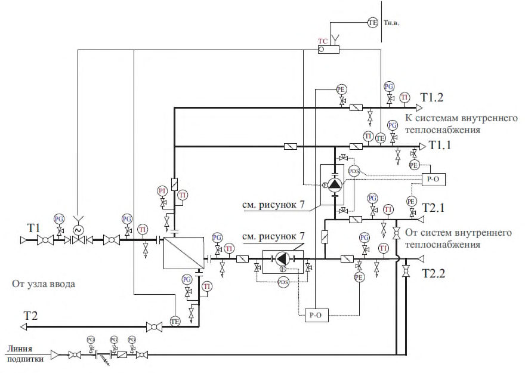
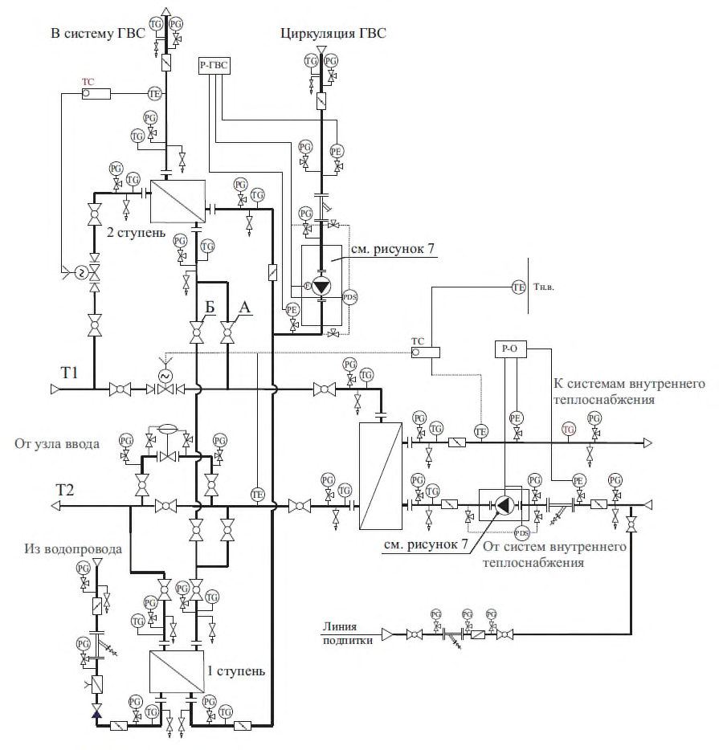
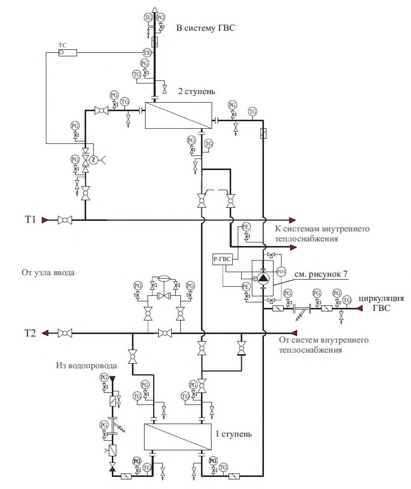
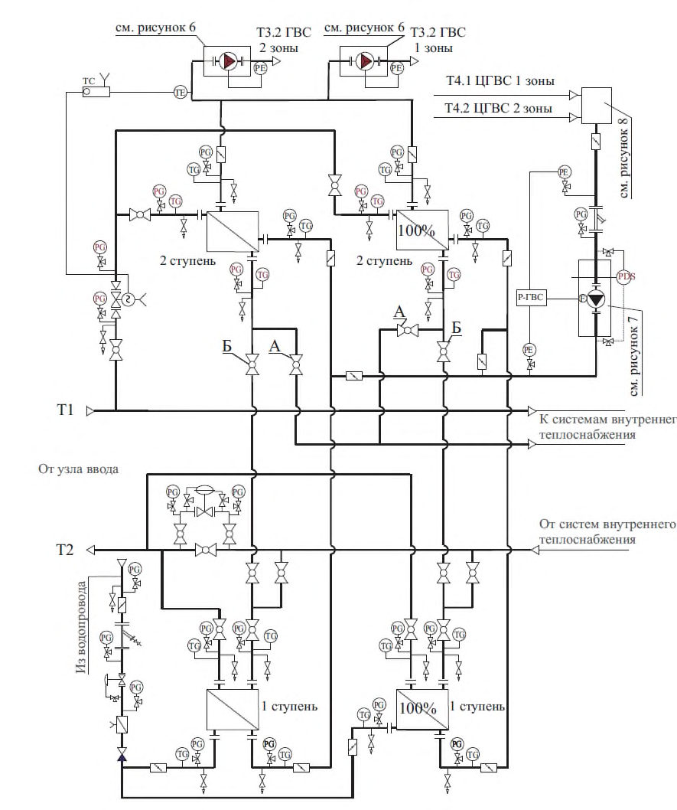
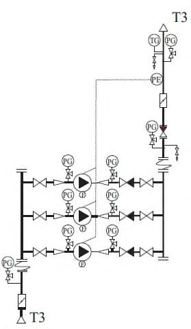
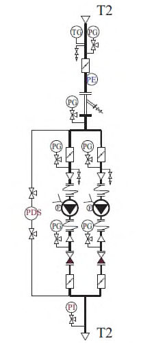
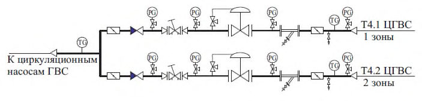
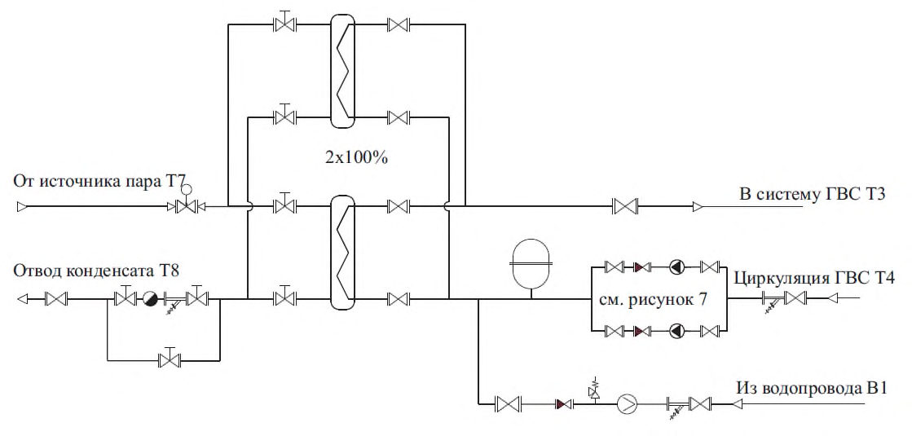
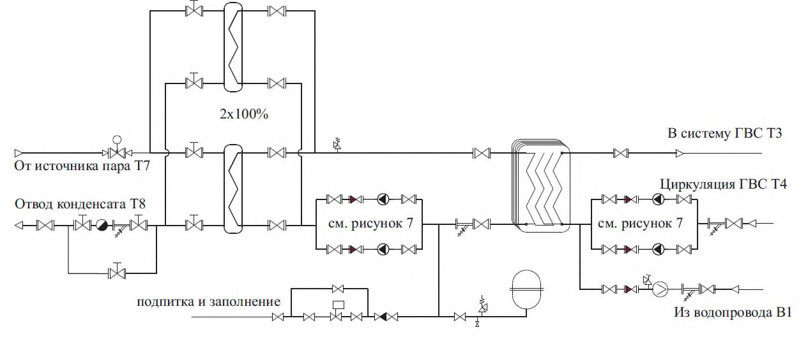

СП 510.1325800.2022 «Тепловые пункты и системы внутреннего теплоснабжения»
О документе: разработчики, утверждение, регистрация, ключевые слова
СВОД ПРАВИЛ СП 510.1325800.2022
Издание официальное
Москва 2022
1 ИСПОЛНИТЕЛЬ -федеральное государственное бюджетное учреждение «Научно-исследовательский институт строительной физики Российской академии архитектуры и строительных наук» (НИИСФ РААСН)
2 ВНЕСЕН Техническим комитетом по стандартизации ТК 465 «Строительство»
3 ПОДГОТОВЛЕН к утверждению Департаментом градостроительной деятельности и архитектуры Министерства строительства и жилищнокоммунального хозяйства Российской Федерации (Минстрой России)
4 УТВЕРЖДЕН приказом Министерства строительства и жилищнокоммунального хозяйства Российской Федерации от 25 января 2022 г. № 42/пр и введен в действие с 26 февраля 2022 г.
5 ЗАРЕГИСТРИРОВАН Федеральным агентством по техническому регулированию и метрологии (Росстандарт).
6 ВВЕДЕН ВПЕРВЫЕ
В случае пересмотра (замены) или отмены настоящего свода правил соответствующее уведомление будет опубликовано в установленном порядке. Соответствующая информация, уведомление и тексты размещаются также в информационной системе общего пользования -на официальном сайте разработчика (Минстрой России) в сети Интернет
© Минстрой России, 2022
Настоящий нормативный документ не может быть полностью или частично воспроизведен, тиражирован и распространен в качестве официального издания на территории Российской Федерации без разрешения Минстроя России
Дата введения - 2022-02-26
УДК [69+696/697](006.354) ОКС 91.140.10
91.140.60
91.140.65
Ключевые слова: тепловой поток, тепловой пункт, тепловая производительность, водоподогреватель, теплопередача, учет тепла
ИСПОЛНИТЕЛЬ
НИИСФ РААСН
наименование организации
Руководитель
разработки
СОИСПОЛНИТЕЛЬ
НП «АВОК» наименование организации
Руководитель
организации
Директор
Исполнительный
директор
\_\_\_\_\_\_\_\_\_\_\_\_\_
\_\_\_\_\_\_\_\_\_\_\_\_\_
И.Л. Шубин
В.В. Потапов
Введение
Настоящий свод правил разработан в целях обеспечения требований Федерального закона от 30 декабря 2009 г. № 384-ФЗ «Технический регламент о безопасности зданий и сооружений» с учетом требований Федерального закона от 23 ноября 2009 г. № 261-ФЗ «Об энергосбережении и повышении энергетической эффективности и о внесении изменений в отдельные законодательные акты Российской Федерации».
Настоящий свод правил содержит требования к тепловым пунктам в зданиях и сооружениях и к внутренним системам теплоснабжения от тепловых пунктов до теплопотребляющих установок.
Свод правил разработан авторским коллективом НП АВОК ( А.Н. Колубков ), НП «Российское теплоснабжение» ( В.Г. Семенов ), ООО ППФ «АК» ( С.Г. Никитин ).
Heating points and internal heat supply systems
1Область применения
Требования настоящего свода правил следует применять при проектировании вновь строящихся, реконструируемых и капитально ремонтируемых тепловых пунктов, предназначенных для присоединения к тепловым сетям систем отопления, вентиляции, кондиционирования воздуха, горячего водоснабжения и технологических теплопотребляющих установок промышленных и сельскохозяйственных предприятий, жилых и общественных зданий.
В случаях, когда может быть принято несколько различных схемных технических решений теплового пункта, следует выполнять техникоэкономический расчет с учетом уровня цен, долговечности и надежности, социальных и экологических факторов, требований энергоэффективности, а также требований заказчика.
Правила распространяются на проектирование тепловых пунктов от запорной арматуры подводящей тепловой сети и хозяйственно-питьевого водопровода на вводе в тепловой пункт до запорной арматуры (включительно) местных систем, отопления, вентиляции, кондиционирования воздуха, горячего водоснабжения и технологических потребителей, расположенных в границах стен теплового пункта.
2Нормативные ссылки
В настоящем своде правил использованы нормативные ссылки на следующие документы:
ГОСТ 12.1.003-2014 Система стандартов безопасности труда. Шум. Общие требования безопасности
ГОСТ 12.1.012-2004 Система стандартов безопасности труда. Вибрационная безопасность. Общие требования
ГОСТ 21.205-2016 Система проектной документации для строительства. Условные обозначения элементов трубопроводных систем зданий и сооружений
ГОСТ 8731-74 Трубы стальные бесшовные горячедеформированные. Технические требования
ГОСТ 8732-78 Трубы стальные бесшовные горячедеформированные. Сортамент
ГОСТ 8733-74 Трубы стальные бесшовные холоднодеформированные и теплодеформированные. Технические требования
ГОСТ 8734-75 Трубы стальные бесшовные холоднодеформированные. Сортамент
ГОСТ 10704-91 Трубы стальные электросварные прямошовные. Сортамент
ГОСТ 10705-80 Трубы стальные электросварные. Технические условия
ГОСТ 10706-76 Трубы стальные электросварные прямошовные. Технические требования
ГОСТ 14202-69 Трубопроводы промышленных предприятий. Опознавательная окраска, предупреждающие знаки и маркировочные щитки
ГОСТ 20295-85 Трубы стальные сварные для магистральных газонефтепроводов. Технические условия
ГОСТ 24570-81 Клапаны предохранительные паровых и водогрейных котлов. Технические требования
ГОСТ Р 51232-98 Вода питьевая. Общие требования к организации и методам контроля качества
СП 10.13130.2020 Системы противопожарной защиты. Внутренний противопожарный водопровод. Нормы и правила проектирования
СП 14.13330.2018 «СНиП II-7-81*Строительство в сейсмических районах»
СП 28.13330.2017 «СНиП 2.03.11-85 Защита строительных конструкций от коррозии» (с изменениями № 1, № 2)
СП 30.13330.2020 «СНиП 2.04.01-85* Внутренний водопровод и канализация зданий»
СП 50.13330.2012 «СНиП 23-02-2003Тепловая защита зданий» (с изменением № 1)
СП 51.13330.2011 «СНиП 23-03-2003 Защита от шума» (с изменениями № 1, № 2)
СП 60.13330.2020 «СНиП 41-01-2003 Отопление, вентиляция и кондиционирование воздуха»
СП 61.13330.2012 «СНиП 41-03-2003 Тепловая изоляция оборудования и трубопроводов» (с изменением № 1)
СП 73.13330.2016 «СНиП 3.05.01-85 Внутренние санитарно-технические системы зданий» (с изменением № 1)
СП 124.13330.2012 «СНиП 41-02-2003 Тепловые сети» (с изменениями № 1, № 2)
СП 347.1325800.2017 Внутренние системы отопления, горячего и холодного водоснабжения. Правила эксплуатации
Примечание - При пользовании настоящим сводом правил целесообразно проверить действие ссылочных документов в информационной системе общего пользования -на официальном сайте федерального органа исполнительной власти в сфере стандартизации в сети Интернет или по ежегодному информационному указателю «Национальные стандарты», который опубликован по состоянию на 1 января текущего года, и по выпускам ежемесячного информационного указателя «Национальные стандарты» за текущий год. Если заменен ссылочный документ, на который дана недатированная ссылка, то рекомендуется использовать действующую версию этого документа с учетом всех внесенных в данную версию изменений. Если заменен ссылочный документ, на который дана датированная ссылка, то рекомендуется использовать версию этого документа с указанным выше годом утверждения (принятия). Если после утверждения настоящего свода правил в ссылочный документ, на который дана датированная ссылка, внесено изменение, затрагивающее положение, на которое дана ссылка, то это положение рекомендуется применять без учета данного изменения. Если ссылочный документ отменен без замены, то положение, в котором дана ссылка на него, рекомендуется применять в части, не затрагивающей эту ссылку. Сведения о действии сводов правил целесообразно проверить в Федеральном информационном фонде стандартов.
3Термины, определения и обозначения
В настоящем своде правил применены следующие термины с соответствующими определениями:
- 3.1.1 автоматизированный узел управления; АУУ
- Совокупность устройств и оборудования, обеспечивающих автоматическое регулирование температуры и расхода теплоносителя на вводе в каждое здание в соответствии с заданным для этого здания температурным графиком или в соответствии с заданием на проектирование. Примечание - Применяется при капитальном ремонте зданий, подключенных к сетям от ЦТП или котельной с раздельным выводом тепловых сетей отопления и горячего водоснабжения.
- 3.1.2 тепловой пункт (здесь)
- Помещение с комплектом оборудования, расположенное в обособленном помещении здания, состоящее из элементов тепловых энергоустановок, обеспечивающих присоединение этих установок к тепловой сети, позволяющее обеспечивать учет и регулирование расхода тепловой энергии и теплоносителя, управлять режимами теплопотребления, изменять температурный и гидравлический режимы в сетях внутреннего теплоснабжения.
- 3.1.3 индивидуальный тепловой пункт; ИТП (здесь)
- Тепловой пункт, предназначенный для присоединения к тепловым сетям, как правило, по независимой схеме систем отопления, вентиляции, горячего водоснабжения и технологических теплоиспользующих установок одного здания или его частей.
- 3.1.4 центральный тепловой пункт; ЦТП (здесь)
- Тепловой пункт, предназначенный для присоединения к тепловым сетям систем теплопотребления одного объекта капитального строительства, состоящего из двух и более зданий (строительных объемов).
- 3.1.5 узел ввода теплоносителя
- Часть теплового пункта с комплектом оборудования, арматуры, трубопроводов, контрольно-измерительных приборов и средств автоматизации, позволяющим осуществлять контроль параметров теплоносителя в здании или секции здания, сооружения, а также, при необходимости, осуществлять распределение потоков теплоносителя между потребителями. Примечание - При подключении от ЦТП и отсутствии АУУ узел ввода дополнительно осуществляет учет расхода тепловой энергии.
- 3.1.6 эксплуатация систем теплопотребления
- Период существования тепловой энергоустановки, включая подготовку к использованию (наладка и испытания), использование по назначению, техническое обслуживание, ремонт и консервацию. В настоящем своде правил применены следующие обозначения: Q оmax - максимальный тепловой поток на отопление при t о , Вт; Qv max - максимальный тепловой поток на вентиляцию при t о или при t нв , Вт; Qh max - максимальный тепловой поток на горячее водоснабжение за период со среднесуточной температурой наружного воздуха 8 °С и менее (отопительный период), Вт; Qhm - средний тепловой поток на горячее водоснабжение в средние сутки за неделю в отопительный период; Q o sp - расчетная тепловая производительность водоподогревателя систем отопления и вентиляции (при общих тепловых сетях), Вт; Qh sp - расчетная тепловая производительность водоподогревателя для систем горячего водоснабжения, Вт; Qht - тепловые потери трубопроводами от ЦТП и в системах горячего водоснабжения зданий и сооружений, Вт; Gh max, Ghm - соответственно максимальный и средний за отопительный период расходы воды в системе горячего водоснабжения, кг/ч; Gd - расчетный расход воды из тепловой сети на тепловой пункт, кг/ч; Gdh , Gd o - расчетный максимальный расход сетевой (греющей) воды соответственно на горячее водоснабжение и отопление, кг/ч; Gd sp -расчетный расход сетевой (греющей) воды через водоподогреватель, кг/ч; F - поверхность нагрева водоподогревателя, м² ; t c - температура холодной (водопроводной) воды в отопительный период (при отсутствии данных принимается 5 °С); t h -температура воды, поступающей в систему горячего водоснабжения потребителей на выходе из водоподогревателя при одноступенчатой схеме включения водоподогревателей или после II-й ступени водоподогревателя при двухступенчатой схеме, °С; t ср - температурный напор или расчетная разность температур между греющей и нагреваемой средой (среднелогарифмическая), °С; t б , t м - соответственно большая и меньшая разности температур между греющей и нагреваемой водой на входе или на выходе из водоподогревателя, °С; 1 - температура сетевой (греющей) воды в подающем трубопроводе после водоподогревателя отопления при расчетной температуре наружного воздуха t з , °С; 2 - то же, в обратном трубопроводе, °С; o1 - то же, в подающем трубопроводе системы отопления, °С; o2 - то же, в обратном трубопроводе системы отопления при независимом присоединении систем отопления, °С; 1 - температура сетевой (греющей) воды в подающем трубопроводе тепловой сети в точке излома графика температуры воды, °С; 2 - то же, в обратном трубопроводе тепловой сети и после систем отопления зданий, °С; 3 - то же, после водоподогревателя горячего водоснабжения, подключенного к тепловой сети по одноступенчатой схеме, рекомендуется принимать 3 = 30 °С; k - коэффициент теплопередачи, Вт/(м² °С). В настоящем своде правил применены условные обозначения по ГОСТ 21.205, а также следующие условные обозначения к рисункам свода правил: затвор дисковый поворотный; кран шаровой фланцевый; кран шаровой муфтовый; клапан обратный; клапан балансировочный; фильтр магнитно-механический; водомер (счетчик воды);
4Общие положения
Мощность оборудования теплового пункта должна соответствовать потребности здания в тепловой энергии.
Допускается устройство ЦТП для присоединения систем теплопотребления одного здания, если для этого здания требуется устройство нескольких зонных ИТП (как правило, для высотных зданий).
В качестве теплоносителя вторичного контура независимых систем потребления тепловой энергии допускается использование других теплоносителей, соответствующих действующим санитарным нормам и расчетным параметрам.
При применении автономного источника теплоснабжения с постоянным поддержанием температуры в подающем трубопроводе допускается подключение ИТП по зависимой схеме с регулированием подачи тепловой энергии потребителю двухходовым или трехходовым регулирующим клапаном в увязке с проектной документацией автономного источника.
При применении автономного источника теплоснабжения, где применяется постоянное поддержание температуры без изменения количества теплоносителя, на вводе в ИТП регулирование подачи тепла потребителю осуществляется трехходовым регулирующим клапаном.
- переустройства внутренних инженерных систем без изменения схемных решений;
- фактического потребления тепловых нагрузок;
- фактического состояния существующих сетей здания (включая накипеобразование);
- проведения необходимых работ в здании для обеспечения теплового комфорта и устранения необходимости в завышенной циркуляции теплоносителя в системах отопления и воды в системе горячего водоснабжения;
- проведения необходимых работ в здании для обеспечения реальной энергоэффективности при применении ИТП (ликвидации перетопов, эффективной циркуляции горячей воды).
Для жилых и общественных зданий рекомендуется устройство ИТП (АУУ, при капитальном ремонте зданий, подключенных к сетям от наружного ЦТП или автономной котельной).
- преобразование параметров теплоносителя;
- контроль параметров теплоносителя;
- регулирование расхода теплоносителя и распределение его по местным системам потребления теплоты;
- поддержание заданных параметров (температуры и давления) для подключаемых местных систем;
- отключение местных систем потребления теплоты;
- защита местных систем от аварийного повышения параметров теплоносителя;
- заполнение и подпитка местных систем потребления теплоты;
- учет тепловых потоков и расходов теплоносителя и конденсата;
- сбор, охлаждение, возврат конденсата и контроль его качества, аккумулирование теплоты.
В тепловом пункте в зависимости от его назначения и конкретных условий присоединения потребителей могут осуществляться все перечисленные функции или только их часть по заданию на проектирование.
- краткое описание схем присоединения потребителей теплоты;
- расчетные расходы теплоты и теплоносителей по каждой системе (для горячего водоснабжения - средний и максимальный (часовой и секундный));
- виды теплоносителей и их параметры (рабочее давление, температура) на входе и на выходе из теплового пункта;
- давление в трубопроводе на вводе и выводе хозяйственно-питьевого водопровода (при его расположении в тепловом пункте);
- тип водоподогревателей, площадь поверхности их нагрева, число секций или пластин по ступеням нагрева и потери давления по обеим средам при максимальных расходах;
- тип, количество, характеристики и мощность насосного оборудования;
- тип, количество, характеристики расширительных баков;
- тип, количество и производительность оборудования для обработки воды для систем горячего водоснабжения:
- количество и установленную вместимость баков-аккумуляторов горячего водоснабжения и конденсатных баков;
- тип и число приборов регулирования (регуляторы давления на вводе, регулирующие клапаны, регулятор перепуска, клапаны на линиях подпитки) и приборов учета количества теплоты и теплоносителя, воды из водопровода, идущей на приготовление горячей воды;
- потери давления в регулирующих клапанах при максимальных расчетных расходах;
- тип, количество и характеристики предохранительных клапанов;
- установленную суммарную мощность электрооборудования, ожидаемое годовое потребление тепловой и электрической энергии;
- общую площадь и строительный объем помещений теплового пункта, высоту помещения.
Рекомендуемая форма паспорта теплового пункта приведена в [11].
5Присоединение систем потребления теплоты
Оборудование теплового пункта следует подбирать с учетом гидравлического режима работы тепловых сетей (пьезометрического графика), графика изменения температуры теплоносителя в зависимости от изменения температуры наружного воздуха и других характеристик систем потребления теплоты.
- условия на подключение теплоснабжающей организации, выданные в соответствии с [4];
- нагрузки подключаемых систем потребления тепловой энергии;
- давление и располагаемый напор на вводе тепловой сети в обслуживаемое здание (минимальные и максимальные значения в случае изменений);
- температурный график тепловых сетей;
- температурные графики систем потребления тепловой энергии обслуживаемого здания;
- потери давления при циркуляции расчетных расходов во внутренних контурах систем потребления тепловой энергии обслуживаемого здания;
- отметку наивысшей точки систем потребления тепловой энергии, объем внутренних контуров систем потребления тепловой энергии при их независимом подключении, рабочее давление приборов;
- минимальное давление в системе холодного водоснабжения на вводе в тепловой пункт при закрытой схеме подключении системы горячего водоснабжения и величину свободного напора или необходимое давление на
СП 510.1325800.2022 входе в систему горячего водоснабжения здания, расчетный циркуляционный расход в системе горячего водоснабжения, обеспечивающий расчетную температуру у наиболее удаленных потребителей;
- располагаемые параметры электроснабжения: число фаз, напряжение;
- требования по автоматизации теплового пункта, размещению приборов учета, наличию системы диспетчеризации.
Максимальные (расчетные) расходы воды из тепловой сети на тепловой пункт определяются согласно приложению А.
При наличии в здании нескольких разных систем потребления тепловой энергии рекомендуется присоединять их к оборудованию ЦТП/ИТП по отдельности.
При присоединении нескольких разных систем потребления через общие водоподогреватели необходимо предусматривать мероприятия по обеспечению у них расчетного теплового и гидравлического режима, включая:
- установку регуляторов подачи тепла на отопление для поддержания заданных графиков изменения температуры циркулирующего в системе теплоносителя;
- применение циркуляционных насосов с частотным регулированием с поддержанием заданного постоянного перепада давления в сети в сочетании с установкой балансировочных клапанов на системы;
- проверку режима работы циркуляционных насосов для всех характерных режимов в течение суток (отключение части систем).
Для многоквартирных жилых зданий следует предусматривать раздельные контуры систем теплоснабжения на жилую и нежилую части здания.
При независимом присоединении систем потребления тепловой энергии с малым перепадом температур и большим расходом теплоносителя (например, напольное отопление или подогрев оборотной воды в бассейне) рекомендуется использовать самостоятельные водоподогреватели.
Системы внутреннего теплоснабжения жилых и общественных зданий следует присоединять по независимой схеме.
Системы внутреннего теплоснабжения допускается присоединять по зависимой схеме:
- при централизованном теплоснабжении производственных и административно-бытовых зданий;
- при теплоснабжении зданий от автономного источника теплоты.
Системы вентиляции и кондиционирования воздуха промышленных предприятий допускается присоединять по зависимой схеме (непосредственно) - когда не требуется изменения расчетных параметров теплоносителя по СП 60.13330.2020 (приложение Б).
Возможно применение других схем подключения по особенностям существующих систем теплоснабжения.
Допускается применение общего водоподогревателя на калориферные установки и системы отопления в случае, если величина тепловой нагрузки на вентиляцию составляет не более 15 % тепловой нагрузки на отопление для встроенных подземных стоянок автомобилей или других аналогичных помещений по заданию на проектирование.
На рисунке 5.1 приведена схема ввода тепловой сети в составе теплового пункта c независимым подключением водоподогревателей. Необходимость установки регулятора давления «до себя» на обратном трубопроводе определяется проектной документацией.
Последовательная установка двух и более регуляторов не допускается. Расчет регулятора перепада давления должен исключать кавитационный режим работы.
Устанавливаемые на обратном трубопроводе регуляторы давления «до себя» (конструктивно - «нормально закрытые») необходимо оборудовать обводной линией с обратным клапаном (для возможности заполнения всего сетевого контура из обратного трубопровода тепловой сети).
В тепловых пунктах не допускается возможность перетока теплоносителя из подающего в обратный трубопровод и наличие обводных трубопроводов элеваторов, регулирующих клапанов, грязевиков и приборов для учета расходов теплоносителя и тепловой энергии.

Р1 - давление в подающем трубопроводе, Р2 - давление в обратном трубопроводе
Рисунок 5.1 - Схема ввода тепловой сети в составе теплового пункта c независимым подключением водоподогревателей
Смесительные (циркуляционные) насосы для систем отопления устанавливают: а) на перемычке между подающим и обратным трубопроводами при располагаемом напоре перед узлом смешения, достаточном для преодоления гидравлического сопротивления системы отдельных потребителей зданий после ЦТП/ИТП, и при давлении в обратном трубопроводе тепловой сети после теплового пункта не менее чем на 0,05 МПа выше статического давления в системе отопления; б) на обратном трубопроводе перед узлом смешения или на подающем трубопроводе после узла смешения при располагаемом напоре перед узлом смешения, недостаточном для преодоления гидравлического сопротивления, указанного в перечислении а).
Рисунок 5.2 - Присоединение системы отопления с изменением параметров теплоносителя

При автономном теплоснабжении жилых и общественных зданий также необходимо устройство узла учета тепловой энергии и теплоносителя.
Для систем теплоснабжения с расчетным температурным графиком 130 °С - 70 °С и выше рекомендуется подключение водоподогревателей горячего водоснабжения по двухступенчатой схеме при соотношении тепловой нагрузки горячего водоснабжения и отопления до 1,2.
Конкретный способ выбирается в зависимости от соотношения максимального потока теплоты Qh max на горячее водоснабжение и максимального потока теплоты Q omax на отопление:
- одноступенчатая параллельная схема:
- двухступенчатая схема (рисунки 3, 4, 5):
Для расчетов оборудования систем горячего водоснабжения и технологических систем по заданию на проектирование принимаются температуры теплоносителя в тепловой сети в точке излома температурного графика или соответствующие летнему минимуму.
Оборудование системы горячего водоснабжения теплового пункта должно обеспечивать расчетный секундный расход, л/с, в системе горячего водоснабжения здания.
Расход тепла на приготовление горячей воды в течение часа максимального водопотребления с учетом потерь тепла подающими и циркуляционными трубопроводами следует определять по СП 30.13330.
Не допускается определять указанный расход тепла при подключении нескольких зданий к одному теплообменнику в ЦТП простым суммированием потребностей в тепле на нужды горячего водоснабжения каждого здания.
Двухступенчатая смешанная схема присоединения водоподогревателей горячего водоснабжения с ограничением максимального расхода воды из тепловой сети с независимым присоединением системы отопления и автоматическим регулированием подачи теплоты на отопление приведена на рисунке 5.3 (в отопительный период кран А - открыт, кран Б - закрыт, при работе в теплый период кран А - закрыт, кран Б - открыт).
Двухступенчатая циркуляционно-повысительная схема горячего водоснабжения с независимым присоединением систем отопления (вентиляции) приведена на рисунке 5.4.
Рисунок 5.3 - Двухступенчатая схема горячего водоснабжения с независимым присоединением систем отопления (вентиляции)

Рисунок 5.4 - Двухступенчатая циркуляционно-повысительная схема горячего водоснабжения

В зимний и переходный период вторые ступени водоподогревателей горячего водоснабжения работают по перемычке с краном А по предвключенной схеме, перемычка с краном Б предусматривается для работы в летний период.
При подключении системы горячего водоснабжения по двухступенчатой схеме допускается использовать водоподогреватель с двумя последовательными ступенями в одном корпусе (моноблок).
СП 510.1325800.2022
Циркуляционный трубопровод горячего водоснабжения подключается к среднему патрубку стороны горячего водоснабжения водоподогревателямоноблока или к линии между водоподогревателями первой и второй ступени.
Для зданий с двумя и более зонами горячего водоснабжения по высоте может применяться двухступенчатая схема горячего водоснабжения с повысительными насосными станциями (рисунок 5.6) после водоподогревателей 2-й ступени (рисунок 5.5). Количество рабочих насосов определяется проектной документацией. При этом на трубопроводах системы В1, подающих воду на водоподогреватель ГВС следует обеспечивать поддержание стабильного давления.
Рекомендуется устанавливать в циркуляционном трубопроводе горячего водоснабжения теплового пункта балансировочный клапан или автоматический регулятор (ограничитель) расхода для выставления при пусконаладочных работах расчетного циркуляционного расхода, если циркуляционный насос не имеет частотного регулирования.
В трубопроводах холодного водоснабжения после обратного клапана следует устанавливать предохранительный клапан с давлением открытия, соответствующим 1,25 Р раб системы горячего водоснабжения.
Датчик температуры системы автоматического регулирования горячего водоснабжения следует устанавливать возможно близко к водоподогревателю.
Методики определения производительности отопительных водоподогревателей, определения параметров их расчета, а также параметров для расчета водоподогревателей горячего водоснабжения, присоединенных по одноступенчатой и двухступенчатой схемам к водяным тепловым сетям, и с применением пароводяных подогревателей приведены в приложениях Б, В, Г и Д.
Рисунок 5.5 - Двухступенчатая схема горячего водоснабжения здания с двумя зонами по высоте

Узел насосов циркуляции систем отопления, настройки объема циркуляции, вентиляции и горячего водоснабжения приведен на рисунке 5.7.
Рисунок 5.6 - Узел повысительных насосных станций водоснабжения

Рисунок 5.7 - Узел насосов циркуляции

На рисунке 5.8 приведен циркуляционный коллектор горячего водоснабжения с регуляторами давления «после себя» и ручными балансировочными клапанами для выравнивания давления циркуляционной воды многозонных систем (к рисунку 5.5).
Рисунок 5.8 - Узел регулирования давления и расхода в циркуляционных трубопроводах двухзонной схемы горячего водоснабжения

- а) при соотношении нагрузок Qh max / Qo max > 1 или Qo max / Qh max ≤ 2 применять схему с промежуточным контуром (рисунок 5.9) при температуре пара Т п ≥ 150 °С. В этом случае в контуре пар-вода паровой водоподогреватель следует рассчитывать на суммарную максимальную тепловую нагрузку для отопления и для горячего водоснабжения в расчетный период, водо-водяной водоподогреватель -на максимальную нагрузку горячего водоснабжения в летний период. Допускается не резервировать пароводяной водоподогреватель по заданию на проектирование.
В холодный период в промежуточном водо-водяном контуре следует поддерживать температуру теплоносителя по отопительному графику. В теплый период в промежуточном водо-водяном контуре необходимо поддерживать график 70 °С - 30 °С для нормальной работы системы горячего водоснабжения;
Рисунок 5.9 - Блок горячего водоснабжения с промежуточным контуром при Т п ≥ 150 °С

б) при соотношении нагрузок Qh max/ Q оmax > 2 - проектировать систему горячего водоснабжения отдельно от системы отопления (рисунок 5.10) при температуре пара Т п < 150 °С. Для обеспечения циркуляции в контуре горячего водоснабжения необходимо предусматривать циркуляционный трубопровод при проектировании системы горячего водоснабжения здания с подпиткой от системы холодного водоснабжения либо предусматривать перемычку между трубопроводом горячего водоснабжения и трубопроводом холодного водоснабжения. На перемычке следует устанавливать циркуляционный насос. Резервирование насоса на перемычке допускается не предусматривать;
- в) рекомендуется применять 100 %-ное резервирование водоподогревателей контура пар-вода всех систем, при обосновании допускается установка двух водоподогревателей по 50 % или 75 % нагрузки каждый.
- а) если пароводяной резервный водоподогреватель рассчитан на 100 % нагрузки рабочего водоподогревателя, то допускается устанавливать одну общую линию отвода конденсата; б) если пароводяной резервный водоподогреватель рассчитан на нагрузку менее 100 % нагрузки основного водоподогревателя, то у каждого водоподогревателя должна быть собственная линия отвода конденсата.
Рисунок 5.10 - Блок горячего водоснабжения с промежуточным контуром при Т п < 150 °С
Конденсатоотводчики должны быть с отводными трубопроводами с установленной на них запорной арматурой.
- по паровой стороне для систем отопления и горячего водоснабжения. В этом случае допускается установка пластинчатых, кожухотрубных (вертикальных и горизонтальных) а также смесительных водоподогревателей;
- по конденсатной стороне только для систем отопления или вентиляции. В этом случае следует применять кожухотрубные водоподогреватели вертикального типа. Применение других водоподогревателей не допускается;
СП 510.1325800.2022
- по водяной стороне потребителя. В этом случае для систем отопления или вентиляции возможно использование любых типов водоподогревателей.
В качестве станции сбора конденсата допускается использовать: а) бак сбора конденсата с электрическими насосами. Бак может быть, как атмосферного типа, так и под избыточным давлением. В случае выбора бака под давлением необходимо обеспечивать подачу пара или газа в бак; б) ресивер с механическими паровыми насосами. Рассчитан на использование в системах с расходом конденсата до 10 т/ч. Система может быть, как атмосферного типа, так и под давлением; в) конденсатные насосы с функцией конденсатоотводчика. Механические насосы с функцией конденсатоотводчика ставятся сразу после водоподогревателя и создают необходимый напор, чтобы прокачать конденсат на источник, при этом выполняют одновременно и функцию отвода конденсата от водоподогревателя и функцию перекачки конденсата на источник.
Для охлаждения конденсата при сбросе его в систему производственной канализации следует предусматривать: а) систему охлаждения конденсата с приямком, куда отводится горячий конденсат и после охлаждения направляется в канализацию; б) буферную емкость, где автоматически смешиваются горячий конденсат и холодная вода, после чего вода отводится в канализацию; в) установку водоподогревателя горячего водоснабжения или технологического водоподогревателя для подогрева в нем холодной воды для нужд горячего водоснабжения или технологии. Подогретую воду следует отдавать потребителю напрямую или отводить в бак-аккумулятор; г) схему охлаждения с чиллером и буферной емкостью или тепловой насос.
СП 510.1325800.2022 одноступенчатой схеме независимо от соотношения тепловых нагрузок систем горячего водоснабжения и отопления.
- наличия горячей воды питьевого качества для технологических процессов;
- отсутствия производственного водопровода с качеством воды, пригодным для данного технологического процесса.
При этом, если потери давления по сетевой воде в водоподогревателе I ступени превысят 50 кПа, оборудуется перемычка вокруг водоподогревателя, на которой устанавливается регулятор «перепуска», рассчитанный на то, чтобы потери давления в водоподогревателе не превышали расчетной величины. В случае превышения расчетной величины допускается присоединение водоподогревателя системы вентиляции после водоподогревателя горячего водоснабжения I ступени.
Использование для горячего водоснабжения паровых водонагревателей барботажного типа не допускается.
Размещение этих устройств, а также установок сбора, охлаждения и возврата конденсата в ЦТП или в ИТП следует предусматривать на основании технико-экономического расчета в зависимости от числа потребителей и расхода пара со сниженными параметрами, количества возвращаемого конденсата, а также расположения потребителей пара на территории предприятия.
- охлаждения конденсата в водоподогревателях с последующим использованием нагретой воды для хозяйственно-бытовых или технологических потребителей;
- получения пара вторичного вскипания в расширительных баках с использованием его для технологических потребителей пара низкого давления.
6Системы внутреннего теплоснабжения
Параметры общего оборудования: насоса, регулирующего клапана и водоподогревателя, при независимой схеме подключения, определяются суммарной мощностью подключаемых местных систем.
Для обеспечения расчетных проектных расходов каждая система должна иметь балансировочный клапан (в случае применения насосов без частотного регулирования).
Подключение систем с разными температурными графиками к общему коллектору приведено на рисунке 2.
Требования к устройству сборных коллекторов приведены в подразделе 8.4.
Расчетный расход на сборных трубопроводах при оборудовании их балансировочными клапанами следует определять, как арифметическую сумму расчетных циркуляционных расходов на стояках.
При выборе производительности циркуляционного насоса его расчетный расход следует определять, как арифметическую сумму расчетных циркуляционных расходов на стояках или сборных трубопроводах.
Подводящие трубопроводы к распределительным поэтажным гребенкам при горизонтальных системах отопления следует оборудовать автоматическими балансировочными парами для корректной работы термостатических клапанов на отопительных приборах.
Импульсные выходы балансировочных клапанов должны обеспечивать легкость измерения перепада давления.
Для этих же целей возможно устройство обводных линий у регулирующего клапана на обвязке калориферов с балансировочным или другим регулирующим клапаном, позволяющим выставлять требуемый расход на компенсацию потерь тепла разводящими трубопроводами.
Указанную арматуру допускается располагать в помещениях вне теплового пункта при наличии разных эксплуатирующих организаций жилого дома и теплового пункта для оперативного отключения аварийных участков.
7Требования к объемно-планировочным и конструктивным решениям тепловых пунктов
В ограждающих конструкциях помещений не допускается применение силикатного кирпича.
По взрыво- и пожарной опасности помещения тепловых пунктов следует относить к категории Д, при теплоносителе паре - к категории Г.
Запрещается размещение ЦТП/ИТП в помещениях с деформационными швами.
Для защиты строительных конструкций от коррозии должны применяться антикоррозионные материалы в соответствии с требованиями СП 28.13330.
При невозможности обеспечить самотечный отвод стоков в канализационную сеть, санузел в ЦТП допускается оборудовать канализационную насосную станцию (КНС) или не предусматривать (при обеспечении возможности использовать уборную в ближайших к тепловому пункту жилых и общественных зданиях, но не далее 50 м и не далее 150 м для территорий производственных зданий).
При отсутствии возможности ввода тепловых сетей непосредственно в помещение ИТП следует выполнять герметичный коммуникационный коллектор для прокладки трубопроводов с гидроизоляцией, уклоном пола к аварийным приямкам, собственными системами вентиляции.
Тепловые пункты могут предусматриваться отдельно стоящими, расположенными в пределах земельного участка, на котором расположено обслуживаемое здание (в случае отсутствия подвалов и невозможности размещения внутри зданий).
Помещения тепловых пунктов с теплоносителем паром давлением более 1,0 МПа должны иметь не менее двух выходов независимо от габаритов помещения.
Двери и ворота из теплового пункта должны открываться из помещения или здания теплового пункта наружу.
Размеры дверей (ворот) ЦТП/ИТП должны позволять перемещение через них оборудования, устанавливаемого в помещении.
Эвакуационный выход из помещения теплового пункта (ИТП, ЦТП) допускается предусматривать через помещение для хранения автомобилей или в лестничную клетку подземной стоянки автомобилей без устройства отдельного выхода наружу.
- принимать водоподогреватели, насосы и другое оборудование в блоках заводской готовности;
- принимать укрупненные монтажные блоки трубопроводов;
- укрупнять технологически связанное между собой оборудование в транспортабельные блоки с трубопроводами, арматурой, контрольно- измерительными приборами, электротехническим оборудованием и тепловой изоляцией.
На блочные тепловые пункты, встраиваемые в здания, выпускаемые как готовые изделия заводской готовности, не распространяются требования приложения Е.
Комплектация оборудования блочных тепловых пунктов должна выполняться в соответствии с проектной документацией.
Комплект поставки блочного теплового пункта в зависимости от назначения может включать в себя в соответствии с проектной документацией:
- трубопроводы и трубопроводную арматуру;
- устройства тепловой автоматики и контрольно-измерительные приборы: контроллеры, преобразователи частоты, регулирующие клапаны, датчики температуры воды и наружного воздуха и пр.;
- насосы, водоподогреватели;
- электрощит с готовыми подключениями к электросети и электрооборудованию теплового пункта с соответствующими автоматическими выключателями и другим оборудованием.
Размеры монтажной площадки в плане следует определять по габаритам наиболее крупной единицы оборудования (кроме баков вместимостью более 3 м³ ) или блока оборудования и трубопроводов, поставляемых для монтажа в собранном виде, с обеспечением прохода вокруг них не менее 0,7 м.
Для производства мелкого ремонта оборудования, приборов и арматуры следует предусматривать место для установки верстака.
Минимальные расстояния в свету от строительных конструкций до трубопроводов, оборудования, арматуры, между поверхностями теплоизоляционных конструкций смежных трубопроводов, а также ширину проходов между строительными конструкциями и оборудованием (в свету) следует принимать по приложению Е.
Допускается размещение оборудования теплового пункта возле стены или на стене, если при этом возможно обслуживание оборудования теплового пункта. В этом случае требования о наличии свободного пространства вокруг теплового пункта не менее 0,7 м по крайней мере с трех сторон не распространяются.
Если в помещении, где находится оборудование теплового пункта, устанавливается также другое оборудование, например, электрощитовое оборудование для питания и управления оборудованием теплового пункта, вентиляционная установка, необходимо предоставить для данного оборудования дополнительную площадь с зонами обслуживания.
При этом размеры монтажного проема и ворот должны быть на 0,2 м больше габаритов наибольшего оборудования или блока трубопроводов.
Стационарные подъемно-транспортные устройства следует предусматривать:
- при массе перемещаемого оборудования от 36 до 150 кг - ручные тали с точкой подвеса над каждой единицей оборудования;
- при массе перемещаемого оборудования от 150 кг до 1 т - монорельсы с ручными талями и кошками или подвесные ручные однобалочные краны;
- то же, более 1 до 2 т - подвесные ручные однобалочные краны;
- то же, более 2 т - подвесные электрические однобалочные краны.
Допускается предусматривать возможность использования передвижных малогабаритных подъемно-транспортных средств при условии обеспечения въезда и передвижения транспортных средств по тепловому пункту.
Средства механизации могут быть уточнены проектной организацией при разработке проектной документации для конкретных условий.
При этом общие дренажные трубопроводы следует предусматривать для:
- узла ввода;
- систем внутреннего теплоснабжения;
- систем холодного и горячего водоснабжения.
Сброс воды из подводящих тепловых сетей в помещения здания и теплового пункта здания не допускается.
- штукатурку наземной части кирпичных стен;
- затирку цементным раствором заглубленной части бетонных стен;
- расшивку швов панельных стен;
- побелку потолков;
- бетонное или плиточное покрытие полов.
Внутренние стены тепловых пунктов покрываются плитками или окрашиваются на высоту 1,5 м от пола масляной или другой водостойкой краской, выше 1,5 м от пола - клеевой или другой подобной краской. Швы между плитками следует заполнять силиконовым герметиком для компенсации теплового расширения.
Каналы должны иметь съемные перекрытия единичной массой не более 30 кг.
Дно каналов должно быть с продольным уклоном не менее 0,005 в сторону водосборного приямка.
8Оборудование, трубопроводы, арматура и тепловая изоляция 8.1 Общие положения
- оборудование должно функционировать в автоматическом режиме, без обслуживающего персонала, осуществляющего только регламентные работы;
- оборудование должно правильно функционировать во всем рабочем диапазоне температуры, давления и перепадов давлений теплоносителя на вводе в обслуживаемое здание;
- подбор компонентов должен проводиться так, чтобы обеспечивать минимизацию затрат при эксплуатации (расход электроэнергии насосов и пр.) при оптимальном уровне капитальных затрат на оборудование при строительстве.
8.2Водоподогреватели
Для горизонтальных секционных кожухотрубных водоподогревателей, как правило, греющая вода из тепловой сети должна поступать: для водоподогревателей систем отопления - в трубки, для водоподогревателей систем горячего водоснабжения - в межтрубное пространство.
При температуре греющего теплоносителя свыше 100 °С как для отопления, так и для ГВС целесообразно подавать его в трубки.
Для пластинчатых водоподогревателей нагреваемая вода должна проходить вдоль первой пластины и последней.
Для пластинчатых водоподогревателей должны применяться пластины из нержавеющей стали.
Методика определения расчетной тепловой производительности водоподогревателей отопления и горячего водоснабжения, методика определения параметров для расчета водоподогревателей систем отопления и горячего водоснабжения при различных схемах присоединения водоподогревателей приведены в приложениях Б-Д.
При расчете поверхности нагрева водо-водяных подогревателей по каждой системе теплопотребления необходимо предусматривать запас поверхности нагрева 20 %.
- для систем горячего водоснабжения - два параллельно включенных водоподогревателя в каждой ступени подогрева, рассчитанных на 50 % производительности каждый;
- для систем отопления зданий и сооружений, не допускающих перерывов в подаче теплоты, -два параллельно включенных водоподогревателя, каждый из которых должен рассчитываться на 100 % производительности.
При максимальном тепловом потоке на горячее водоснабжение до 2 МВт или при возможности подключения передвижных водоподогревательных установок допускается предусматривать в каждой ступени подогрева один водоподогреватель горячего водоснабжения, кроме зданий, не допускающих перерывов в подаче теплоты на горячее водоснабжение.
Для промышленных и сельскохозяйственных предприятий, не допускающих перерывов в подаче горячей воды, следует предусматривать установку двух параллельно включенных водоподогревателей в каждой ступени горячего водоснабжения для хозяйственно-бытовых нужд.
При установке для систем отопления, вентиляции и горячего водоснабжения пароводяных водоподогревателей число их должно приниматься не менее двух, включаемых параллельно, резервные водоподогреватели не предусматриваются.
Для технологических установок, не допускающих перерывов в подаче теплоты, должны предусматриваться резервные водоподогреватели. Расчетная производительность резервных водоподогревателей должна приниматься в соответствии с режимом работы технологических установок предприятия.
При расчетах водо-водяных водоподогревателей отопления и вентиляции с применением теплоносителей, отличных от воды, при том, что они соответствуют требованиям [6] и взрыво-пожаробезопасности, следует принимать во внимание свойства этого теплоносителя. Состав и свойства применяемого теплоносителя следует указывать в проектной документации.
Сопротивление водоподогревателя по первичному и вторичному контурам рекомендуется принимать не более 0,03 МПа.
Потери давления во вторичном контуре водоподогревателя отопления должны приниматься из расчета возможного уменьшения расхода электроэнергии при работе циркуляционного насоса системы отопления.
Потери давления во вторичном контуре водоподогревателя горячего водоснабжения должны приниматься возможно малыми для обеспечения работы системы горячего водоснабжения без дополнительных подкачивающих насосов.
При подключении системы горячего водоснабжения через двухступенчатый водоподогреватель необходима проверка потери давления в первой ступени первичного контура при температуре точки излома температурного графика источника. Проверка должна проводиться для режима прохождения через эту ступень расхода, складывающегося из двух составляющих. Первая часть - расход из системы отопления в переходном режиме. Вторая часть -расход воды теплосети из второй ступени водоподогревателя горячего водоснабжения для догрева воды горячего водоснабжения до заданных температур.
Для увеличения срока службы теплообменников рекомендуется применять облицовку портов теплообменников для системы горячего водоснабжения из нержавеющей стали. Вместо облицовки нержавеющей сталью допускается применение резиновых втулок в порт из того же материала, что и основные прокладки.
- мощность;
- температурный график данного расчета;
- типы и расходы теплоносителей при таком графике;
- потери давления по сторонам водоподогревателя;
- средняя логарифмическая разность температур;
- коэффициент теплопередачи;
- площадь поверхности теплопередачи;
- материал и толщина пластин;
- материал уплотнений (при их наличии) или материал припоя;
- максимальные расчетные температура и давление.
- габаритные размеры и вес сухого/заполненного водоподогревателя.
8.3Насосы и насосные станции
- циркуляционные насосы систем отопления и вентиляции при зависимом или независимом подключении этих систем;
- насосное оборудование, предназначенное для корректировки температурных режимов в системах отопления и вентиляции (насосы смешения, согласно 5.9);
- повысительные насосы систем водоснабжения;
- циркуляционные насосы систем горячего водоснабжения;
- подпиточные насосы систем отопления и вентиляции при независимом подключении систем, при необходимости.
Насосное оборудование тепловых пунктов зданий должно соответствовать по уровню шума разделу 13.
Рекомендуется применение бесфундаментных центробежных насосов с воздушным охлаждением электродвигателя, всасывающий и напорный патрубок которых расположены на одной линии.
Максимальная температура перекачиваемой среды должна быть не выше допустимой для насоса данного типа.
При использовании двух циркуляционных насосов, работающих по принципу «рабочий-резервный», допускается применение сдвоенных насосов (насосы-дубли) для уменьшения числа компонентов и габаритных размеров тепловых пунктов зданий. Конструкцией насосов должно быть предусмотрено полное отключение одного из них при проведении ремонтных работ.
- а) при установке насоса на перемычке между подающим и обратным трубопроводами системы отопления:
- напор - на 0,02-0,03 МПа (2-3 м вод. ст.) больше потерь давления в системе отопления;
- подачу насоса G , кг/ч, - по формуле
где Gd o -расчетный максимальный расход воды на отопление из водоподогревателя отопления, кг/ч, определяется по формуле
здесь Q omax - максимальный тепловой поток на отопление, Вт; с - удельная теплоемкость воды, кДж/(кг °С); u - коэффициент смешения, определяемый по формуле
где 1 - температура воды в подающем трубопроводе от водоподогревателя отопления при расчетной температуре наружного воздуха для проектирования отопления t о , °С;
2 - то же, в обратном трубопроводе, °С;
- o1 - тоже, в подающем трубопроводе системы отопления, °С;
- б) при установке насоса на подающем или обратном трубопроводе системы отопления:
- напор - в зависимости от требующегося давления в системе отопления для ее заполнения с запасом в 2-3 м вод. ст.;
где Q max - максимальный тепловой поток на вентиляцию Вт;
B 1 - температура воды в подающем трубопроводе, поступающей в калориферы, при расчетной температуре наружного воздуха t о , °С;
B 2 - то же, в обратном трубопроводе после калориферов, °С.
Коэффициент смешения следует определять по формуле (8.3), принимая вместо о1 и 2 значения температуры воды в трубопроводах до и после калориферов системы вентиляции при расчетной температуре наружного воздуха.
- подачу насоса - по расчетным расходам воды в системе отопления и вентиляции, определенным по формулам приложения В;
- напор - при установке насосов в ИТП - по сумме потерь давления в водоподогревателях и в системах отопления и вентиляции.
- подачу насоса - из расчета заполнения системы в течение не более 5 ч;
- напор - из условия поддержания статического давления в системах отопления и вентиляции с проверкой работы систем в отопительный период исходя из пьезометрических графиков.
На перемычке допускается устанавливать два смесительных насоса, по 50 % требуемой подачи каждый, без резерва.
При подборе циркуляционных насосов расчетная подача их должна быть в пределах 0,7-1,1 подачи при максимальном КПД для насосов данного типа.
8.4Трубопроводы и арматура
Трубы, рекомендуемые для применения, приведены в приложении Ж.
Рекомендуется использование трубопроводов из коррозионно-стойких материалов.
Для сетей горячего водоснабжения в закрытых системах теплоснабжения следует применять оцинкованные трубы с цинковым покрытием толщиной не менее 30 мкм или эмалированные, удовлетворяющие санитарным требованиям.
Сварка оцинкованных трубопроводов не допускается. В случае применения сварки подлежат заводской оцинковке участки и блоки свариваемых трубопроводов.
Крутоизогнутые отводы допускается сваривать между собой без прямого участка. Крутоизогнутые и сварные отводы вваривать непосредственно в трубу без штуцера (трубы, патрубка) не допускается.
Запрещается использование трубопроводов из полимерных материалов внутри ЦТП/ИТП.
Рукоятки запорной арматуры не должны выступать (перекрывать) пути прохода для обслуживающего персонала
Р у 2,5 МПа, t 200 С - для воды;
Р у 4,0 МПа, t 425 °С - для пара.
- на всех подающих и обратных трубопроводах тепловых сетей на вводе и выводе их из тепловых пунктов;
- на всасывающем и нагнетательном патрубках каждого насоса;
- на подводящих и отводящих трубопроводах каждого водоподогревателя.
В остальных случаях необходимость установки запорной и регулирующей арматуры определяется в соответствии с проектной документацией. При этом число арматуры на трубопроводах должно быть минимально необходимым, обеспечивающим надежную и безаварийную работу. Установка дублирующей запорной арматуры допускается только при обосновании.
Применяемое в любом контуре оборудование должно соответствовать параметрам рабочего давления и температуре данного контура.
В пределах тепловых пунктов для установки в трубопроводы первичного контура с рабочим давлением до 1,6 МПа рекомендуется использовать стальную запорную арматуру с запорным элементом из нержавеющей стали и фильтры с чугунным корпусом. При обосновании допускается применение фланцевых шаровых кранов.
Для соединения трубопроводов и оборудования теплового пункта с рабочим давлением до 1,0 МПа разрешается использовать межфланцевые поворотные заслонки с затвором из нержавеющей стали, устанавливаемые между воротниковыми фланцами, шаровые краны с шаром из нержавеющей стали и латунным или бронзовым корпусом и другое оборудование с латунным или бронзовым корпусом.
На трубопроводах холодного и горячего водоснабжения запрещается использовать арматуру с корпусом из стали или других материалов, не обладающих коррозионной стойкостью.
СП 510.1325800.2022
На спускных, продувочных и дренажных устройствах арматуру из серого чугуна применять не допускается.
При установке чугунной арматуры в тепловых пунктах должна предусматриваться защита ее от напряжений изгиба. В тепловых пунктах допускается также применение арматуры из латуни и бронзы, удовлетворяющей параметрам эксплуатации.
Принимать запорную арматуру в качестве регулирующей не допускается.
- на трубопроводе холодного водоснабжения перед водоподогревателем горячего водоснабжения;
- на трубопроводе перемычки между подающим и обратным трубопроводами зависимых систем потребления тепловой энергии;
- на напорном трубопроводе после каждого насоса, в том числе сдвоенного насоса. При наличии на трубопроводе перехода после насоса на больший диаметр, обратный клапан следует устанавливать на участке с большим диаметром;
- на обводном трубопроводе у повысительных насосов;
- на подпиточном трубопроводе независимой системы потребления тепловой энергии;
- на сбросном трубопроводе из независимой системы потребления тепловой энергии;
- в случае установки на трубопроводе сдвоенного насоса со встроенной перекидной заслонкой смежных рабочих камер;
- на охладителе проб сетевой воды;
- на каждом трубопроводе циркуляции горячего водоснабжения при схеме с повысительными насосами после ручного балансировочного клапана (см. рисунки 5.5 и 5.8);
Не следует предусматривать дублирующие обратные клапаны, устанавливаемые за насосами.
- в высших точках всех трубопроводов - условным диаметром не менее 15 мм для выпуска воздуха (воздушники);
- в низших точках трубопроводов воды и конденсата, а также на коллекторах - условным диаметром не менее 15 мм и условным диаметром не менее 25 мм, для трубопроводов условным диаметром 32 мм и более для спуска воды.
В качестве воздушников в первичном контуре используются шаровые клапаны, во вторичном контуре следует использовать автоматические воздухоотводчики, которые допускается заменять шаровыми кранами.
В качестве воздушников разрешается использовать трехходовые краны манометров и воздухоотводчики насосов.
Для безразборной промывки оборудования и трубопроводов допускается использование установленных на трубопроводах спускников и воздушников.
Пусковые дренажи должны устанавливаться:
- перед запорной арматурой на вводе паропровода в тепловой пункт;
- на распределительном коллекторе;
- после запорной арматуры на ответвлениях паропроводов при уклоне ответвления в сторону запорной арматуры (в нижних точках паропровода).
Постоянные дренажи должны устанавливаться в нижних точках паропровода.
В случаях, когда имеется противодавление в трубопроводах для сбора конденсата, должна предусматриваться установка обратного клапана на конденсатопроводе после обводного трубопровода. Обратный клапан должен быть установлен на обводном трубопроводе, если он предусмотрен в конструкции конденсатоотводчика.
- расход конденсата после пароводяных водоподогревателей - равным максимальному расходу пара с коэффициентом 1,2, а для дренажа паропроводов - равным максимальному количеству конденсирующегося пара на дренируемом участке паропровода с коэффициентом 2;
СП 510.1325800.2022
- давление в трубопроводе перед конденсатоотводчиком Р 1, МПа, равным 0,95 давления пара перед водоподогревателем или равным давлению пара в точке дренажа паропровода;
- давление в трубопроводе после конденсатоотводчика Р 2, МПа, определяется по формуле
где а - коэффициент, учитывающий потерю давления в конденсатоотводчике и при отсутствии данных принимаемый равным 0,6.
При свободном сливе конденсата давление на выходе из трубопровода Р 2 принимается равным 0,01 МПа, а при сливе в открытый бак - равным 0,02 МПа.
где G - расчетный расход конденсата, т/ч.
Высота защитного столба конденсата в гидрозатворе, в зависимости от давления в конденсатном баке, водоподогревателе или расширительном баке, должна приниматься по таблице 8.1.
Таблица 8.1
| Давление, МПа | Высота столба конденсата, м |
|---|---|
| 0,01 | 1,2 |
| 0,02 | 2,25 |
| 0,03 | 3,3 |
| 0,04 | 4,4 |
| 0,05 | 5,5 |
Врезки подводящего трубопровода распределительного коллектора и отводящего трубопровода сборного коллектора рекомендуется предусматривать около неподвижной опоры.
8.5Баки и грязевики
Баки-аккумуляторы должны рассчитываться на выравнивание суточного графика потребления воды в сутки наибольшего водопотребления. При этом вместимость баков-аккумуляторов рекомендуется принимать исходя из условий расчета производительности водоподогревателей по среднему потоку теплоты на горячее водоснабжение.
Вместимость баков-аккумуляторов, устанавливаемых на промышленных и сельскохозяйственных предприятиях, должна приниматься в соответствии с СП 30.13330.
Баки-аккумуляторы, работающие под давлением выше 0,07 МПа, должны соответствовать требованиям [7].
Применение прямоугольных баков допускается только для отстоя конденсата при условии невозможности появления в баке избыточного давления.
В качестве предохранительных устройств в баках должны, как правило, использоваться предохранительные клапаны; гидрозатворы рекомендуется применять при рабочем давлении в баке не более 15 кПа.
Для баков, работающих под налив, предохранительные устройства не предусматриваются; эти баки должны быть оборудованы штуцером для сообщения с атмосферой без установки на нем запорной арматуры; условные проходы этих штуцеров следует принимать по таблице 8.2.
Таблица 8.2
| Вместимость конденсатных баков, м³ | 1 | 2; 3 | 5 | 10 | 15; 20 | 25 | 40; 50 | 60 | 75 | 100; 125 | 150; 200 |
|---|---|---|---|---|---|---|---|---|---|---|---|
| Условный диаметр штуцера, мм | 50 | 70 | 80 | 100 | 125 | 150 | 200 | 250 300 | 250 300 | 350 | 400 |
где - удельный объем пара в зависимости от давления в баке, м³ /кг;
- х - массовое паросодержание конденсата, доли ед., определяемое по формуле
i 1 , i 2 - удельное теплосодержание конденсата соответственно при давлении пара перед конденсатоотводчиком и в расширительном баке (энтальпия воды на линии насыщения), кДж/кг;
- r 2 -удельная скрытая теплота парообразования при давлении в расширительном баке, кДж/кг;
G - расчетный расход конденсата, т/ч;
- k -коэффициент, учитывающий наличие пролетного пара, который допускается принимать равным 1,02÷1,05.
Диаметр фильтра должен быть не меньше диаметра трубопровода, на котором он устанавливается. Размер отверстий сетки фильтра должен быть не более 1,0 мм.
8.6Расширительное оборудование и предохранительные устройства
Применение закрытых мембранных расширительных баков для систем теплопотребления определяется полезной емкостью, давлением на мембрану и ограничивается статической высотой системы равной 0,4-0,45 МПа (40-45 м вод. ст.).
В независимой системе, где гидростатическое давление не превышает 0,4, 0,6 или 1,0 МПа, следует применять закрытый мембранный расширительный бак, соответственно с рабочим давлением 0,4, 0,6 или 1,0 МПа, часть которого заполнена воздухом, подключаемый напрямую к системе.
При большей статической высоте системы теплопотребления следует применять установки поддержания давления (УПД) -специальное автоматическое устройство с системой клапанов, прессостатом, насосом подпитки и расширительным баком. В таких устройствах бак не подключается к системе напрямую и не находится под давлением системы.
Установка запорной арматуры в линии между системой и предохранительным клапаном запрещается. Непосредственно перед расширительным баком разрешается устанавливать запорный клапан, закрываемый для проверки давления в газовой полости бака.
Трубопровод системы подпитки присоединяется таким образом, чтобы между точкой присоединения и присоединительным трубопроводом расширительной системы не было перекрываемого вентиля. Для контроля давления в системе в точке присоединения устанавливается манометр.
Рекомендуется установка сигнального манометра с нижним и верхним пределом.
Предохранительные устройства должны быть рассчитаны и отрегулированы так, чтобы давление в защищенном элементе не превышало расчетное более чем на 10 %, а при расчетном давлении до 0,5 МПа - не более чем на 0,05 МПа. Расчет пропускной способности предохранительных устройств должен выполняться по ГОСТ 24570.
- в обратном трубопроводе независимой системы потребления тепловой энергии;
- между обратным клапаном линии подачи воды холодного водоснабжения и водоподогревателем горячего водоснабжения.
Предохранительные клапаны рекомендуется устанавливать в случаях применения параллельного соединения водоподогревателей, имеющих собственную запорную арматуру, на входном патрубке каждого водоподогревателя по нагреваемой стороне, кроме применения двух водоподогревателей, рассчитанных на 100 %-ную тепловую нагрузку каждый.
Предохранительные клапаны независимых систем размещаются, как правило, в присоединительном трубопроводе расширительной системы. Каждый предохранительный клапан подсоединяется к своему сбросному патрубку.
Номинальный диаметр предохранительного клапана должен быть не менее DN 15. Рекомендуется использование двух предохранительных клапанов параллельно. Размер предохранительного вентиля, находящегося в тепловом пункте сети теплоснабжения, определяется по таблице 8.3.
Таблица 8.3
| Мощность водоподогревателя, кВт | Предохранительный клапан DN , мм |
|---|---|
| До 100 | 15 |
| 100-400 | 20 |
| 400-800 | 25 |
| Св. 800 | 32 |
Предохранительные клапаны должны иметь отводящие трубопроводы, предохраняющие обслуживающий персонал от ожогов при срабатывании клапанов. Эти трубопроводы должны быть защищены от замерзания и оборудованы дренажами для слива скапливающегося в них конденсата. Сброс воды в воронки не допускается. Установка запорных органов на линиях сброса от предохранительных клапанов не допускается.
8.7Тепловая изоляция
Конструктивное исполнение теплоизоляции должно предусматривать возможность ревизии фланцевых соединений и замену запорнорегулирующей арматуры без повреждения и демонтажа основного слоя теплоизоляции теплопроводов.
Окраска, условные обозначения, размеры букв и расположение надписей должны соответствовать ГОСТ 14202. Пластинчатые водоподогреватели следует окрашивать теплостойкой эмалью.
9Водоподготовка
Противокоррозионная и противонакипная обработка воды, подаваемой потребителям, не должна ухудшать ее качество по ГОСТ Р 51232.
В случае применения электромагнитных аппаратов необходимо предусматривать контроль напряженности магнитного поля по силе тока.
Напряженность магнитного поля в рабочем зазоре магнитного аппарата не должна превышать 159∙10³ А/м.
- производительность - по мгновенному (секундному) расходу воды на горячее водоснабжение, л/с;
- количество - по требуемой производительности без резерва.
Допускается применение оцинкованных труб в сочетании с противокоррозионной обработкой в тепловых пунктах.
На пробоотборных трубопроводах должны предусматриваться холодильники для охлаждения проб до 20 °С - 40 °С. Пробоотборные линии и поверхности охлаждения холодильников выполняются из нержавеющей стали.
10Отопление, вентиляция, водоснабжение и водоотведение
СП 510.1325800.2022
Температура воздуха в рабочей зоне в холодный и переходный периоды года должна быть не более 28 °С, в теплый период года - не более чем на 5 °С выше расчетной температуры наружного воздуха по параметрам А.
При размещении тепловых пунктов в жилых и общественных зданиях следует выполнять проверочный расчет теплопоступлений из помещения теплового пункта в смежные с ним помещения. В случае превышения в этих помещениях допустимой температуры воздуха следует предусматривать мероприятия по дополнительной теплоизоляции ограждающих конструкций смежных помещений.
Схемы приточно-вытяжной вентиляции тепловых пунктов следует выполнять с рециркуляцией удаляемого воздуха из теплового пункта.
Опорожнение конденсатных баков предусматривается по напорным конденсатопроводам, в водосборный приямок допускается предусматривать слив конденсата, оставшегося в баке ниже уровня всасывающих патрубков насосов.
Насосы, предназначенные для откачки воды из водосборного приямка, не допускается использовать для промывки систем потребления теплоты. Дренажные насосы, предназначенные для откачки воды из водосборного приямка при сливе теплоносителя, должны быть рассчитаны на его температуру, в противном случае следует предварительно понижать температуру перекачиваемой жидкости.
11Электроснабжение и электрооборудование
Отдельно стоящие и встроенные ЦТП/ИТП многоквартирных жилых домов, высотных и уникальных зданий следует относить к электроприемникам I категории.
12Автоматизация и диспетчеризация, контроль параметров
- ручной режим - команды могут формироваться от переключателей, кнопок или сенсорной панели, расположенных на двери шкафа управления, от панели индикации и управления контроллера;
- автоматический режим - команды формируются контроллером на основании информации, полученной от периферийных датчиков по заданной программе.
- поддержание заданной температуры воды, поступающей в систему горячего водоснабжения;
- поддержание температуры теплоносителя, возвращаемого в тепловую сеть, в соответствии с температурным графиком;
- регулирование подачи теплоты (теплового потока) в системах отопления и вентиляции в соответствии с температурным графиком в зависимости от температуры наружного воздуха;
- поддержание требуемого перепада давлений воды в подающем и обратном трубопроводах тепловых сетей на вводе в ЦТП или ИТП при превышении фактического перепада давлений над требуемым более чем на 0,2 МПа;
- минимальное заданное давление в обратном трубопроводе системы отопления и вентиляции;
- поддержание требуемого перепада давления воды в подающем и обратном трубопроводах систем отопления и вентиляции (см. рисунок 4) для обеспечения необходимой циркуляции;
- поддержание требуемых параметров давления в системах горячего водоснабжения и компенсации водоразбора для обеспечения необходимой циркуляции горячей воды;
- включение и выключение подпиточных устройств для поддержания статического давления в системах теплопотребления отопления и вентиляции при их независимом присоединении;
- переключение насосов с рабочего на резервный и наоборот, при неисправности, а также для выравнивания моторесурсов насосов;
- включение и выключение дренажных насосов в подземных тепловых пунктах по заданным уровням воды в дренажном приямке.
- а) показывающие манометры:
- после запорной арматуры на вводе в тепловой пункт трубопроводов водяных тепловых сетей, паропроводов и конденсатопроводов;
- после узла смешения;
- до и после регуляторов давления на трубопроводах водяных тепловых сетей и паропроводов;
- на паропроводах до и после редукционных клапанов;
- на подающих трубопроводах после запорной арматуры на каждом ответвлении к системам потребления теплоты и на обратных трубопроводах до запорной арматуры - из систем потребления теплоты;
- до запорной арматуры на вводе в тепловой пункт трубопроводов водяных тепловых сетей, паропроводов и конденсатопроводов;
- до и после грязевиков, фильтров и водомеров;
- б) показывающие термометры:
- после запорной арматуры на вводе в тепловой пункт трубопроводов водяных тепловых сетей, паропроводов и конденсатопроводов;
- на трубопроводах водяных тепловых сетей после узла смешения;
- на обратных трубопроводах из систем потребления теплоты по ходу воды перед задвижками.
Показывающие манометры должны предусматриваться перед всасывающими и после нагнетательных патрубков насосов.
Максимальное рабочее давление, измеряемое прибором, должно быть в пределах 2/3 максимума шкалы. Верхний предел шкалы регистрирующих и показывающих термометров должен быть равен максимальной температуре измеряемой среды. Термометры на трубопроводах должны быть установлены в гильзах, а выступающая часть термометра должна быть защищена оправой.
Отображение параметров системы диспетчеризации должно выполняться на панели управления и индикации шкафа управления или переносной панели оператора и удаленно в диспетчерском пункте, или на мобильных устройствах в виде схем, диаграмм, таблиц или их комбинаций.
При отсутствии объединенной диспетчерской службы (ОДС) на промышленном или сельскохозяйственном предприятии следует предусматривать аварийно-предупредительную сигнализацию из индивидуальных тепловых пунктов в службу эксплуатации в виде SMSоповещений.
- приeм и передачу данных по стандартным протоколам связи;
- преобразование, обработку и хранение полученных данных и их временных меток во внутренней базе данных;
- преобразование и (или) обработку полученных данных в соответствии с заданными алгоритмами;
- доступ к системе на основе ролей пользователей;
- создание пользователей и групп пользователей, назначение прав доступа пользователей и групп к регистрируемой в системе и передаваемой из системы информации;
- отображение полученных аварийных сигналов и их состояний с возможностью создания фильтров отображения сообщений;
- передачу аварийных сообщений и всех параметров систем с помощью электронной почты, созданием сообщения с необходимым содержанием и указанным в зависимости от заданного критерия адресатом;
- отображение контрольных списков действий по локализации и устранению аварийной ситуации, регистрации действий оператора;
- отображение журналов регистрации технологических параметров и (или) параметров работы систем в виде графиков и (или) диаграмм;
- ведение журнала событий на сервере.
- дистанционное управление инженерным оборудованием;
- корректировку формулы регулирования;
- перевод системы на работу на пониженных параметрах для сохранения живучести системы при авариях (отключение нагрузки горячего водоснабжения, снижение потребляемой мощности для отопления);
- контроль температуры в обратном трубопроводе для принятия решения по сливу воды с системы отопления;
- переход на работу с измеряемым и управляемым сливом теплоносителя.
13Требования по снижению уровней шума и вибрации от работы насосного оборудования
Звукопоглощающая облицовка должна предусматриваться из несгораемых материалов.
Для соединения трубопроводов с патрубками насосов рекомендуется предусматривать гибкие виброизолирующие вставки.
Размеры отверстий для пропуска труб через стены и фундаменты должны обеспечивать зазор не менее 100 мм между поверхностями теплоизоляционной конструкции трубы и строительной конструкцией здания. Для заделки зазора следует применять эластичные водогазонепроницаемые материалы.
Неподвижные опоры трубопроводов ввода должны размещаться на расстоянии не менее чем 2 м от наружной стены здания.
14Дополнительные требования к проектированию тепловых пунктов в особых природных и климатических условиях
14.1Общие требования
Примечание - При просадочных грунтах I-го типа тепловые пункты проектируют без учета требований настоящего раздела.
14.2Сейсмические районы
Для заделки зазора следует применять эластичные водогазонепроницаемые материалы.
14.3Многолетнемерзлые грунты
14.4Подрабатываемые территории
14.5Просадочные грунты
Полы должны быть водонепроницаемыми, с уклоном не менее 0,01 м в сторону водосборного водонепроницаемого приямка.
В местах сопряжения полов со стенами должны предусматриваться водонепроницаемые плинтусы на высоту 0,1-0,2 м.
15Требования энергетической эффективности и рационального использования природных ресурсов
В проектной документации должно быть предусмотрено оснащение тепловых пунктов зданий и сооружений приборами учета используемых энергетических ресурсов.
Соответствие систем внутреннего теплоснабжения зданий и сооружений требованиям энергетической эффективности должно обеспечиваться путем выбора в проектной документации оптимальных решений.
- совершенствование методов контроля и учета энергетических ресурсов;
- оснащение зданий приборами учета и завершение перехода на расчеты за фактическое потребление тепловой энергии, исходя из показаний приборов учета;
- разработка и внедрение автоматизированной системы учета потребления тепловой и электрической энергии;
- обеспечение оптимальных режимов работы оборудования тепловых пунктов для снижения всех видов используемых энергоресурсов (тепловых, энергетических и т. п.);
- проведение работ по нормализации и контролю за давлением (напором) воды в тепловых пунктах;
- выполнение мероприятий по оптимизации перепада давления на вводе сетей теплоснабжения в здания;
- сокращение нерационального потребления тепловой и электрической энергии на предприятиях, выявленного при проведении энергоаудита;
- разработку и внедрение инновационных технологий и оборудования в тепловых пунктах, системах потребления и распределения теплоты;
СП 510.1325800.2022
- оснащение всех тепловых пунктов автоматикой регулирования подачи теплоты на отопление по задаваемому контроллером графику температур теплоносителя в зависимости от изменения температуры наружного воздуха, с учетом индивидуального для каждого дома теплового баланса и выявленного запаса тепловой мощности системы отопления;
- гидравлическую балансировку внутренних сетей теплоснабжения с использованием автоматических или, при обосновании, ручных балансовых клапанов.
- насосные агрегаты с регулируемым приводом (числом оборотов двигателя), что позволяет поддерживать требуемое расчетное давление воды и теплоносителя после насосов, их расход независимо от колебаний давления в системах внутреннего тепло- и водоснабжения зданий;
- выполнение комплекса мероприятий по регулированию давления воды в системах водоснабжения жилых зданий путем установки балансировочных кранов и их регулировки в процессе пусконаладочных работ;
- регулирующие резервуары в системах холодного и горячего водоснабжения зданий при условии обеспечения контроля качества воды эксплуатационными службами и органами санитарно-эпидемиологического надзора.
16Требования безопасности и доступности при пользовании. Долговечность и ремонтопригодность
СП 510.1325800.2022 обеспечивающие доступность и ремонтопригодность оборудования для возможности определения фактических значений их параметров и других характеристик, а также параметров материалов, изделий и устройств, влияющих на безопасность пользования в процессе их строительства и эксплуатации.
Допускается плановая замена оборудования с учетом установленного срока службы.
Заделку зазоров и отверстий в местах прокладки трубопроводов следует предусматривать негорючими материалами, обеспечивая нормируемый предел огнестойкости пересекаемых ограждений.
Трубы, арматура, оборудование и материалы, применяемые при устройстве внутренних систем теплоснабжения, должны соответствовать требованиям настоящего свода правил, национальных стандартов, санитарноэпидемиологических норм и других документов, утвержденных в установленном порядке.
Датчики (детекторы) протечки воды в зависимости от конструкции следует устанавливать на поверхности пола или непосредственно в пол в местах, гарантирующих целевое срабатывание. Блоки питания системы контроля протечек следует устанавливать в дополнение к имеющейся запорной арматуре. Для обеспечения безопасности напряжение электропитания клапанов следует принимать 12 В (при обосновании допускается установка нормально-открытых электромагнитных соленоидных запорных клапанов с питанием 220 В).
Система контроля затопления должна иметь непрерывное электропитание и по сигналу датчиков (детекторов) управлять закрытием электромагнитных клапанов на трубопроводах.
17Порядок проведения монтажа и сдачи в эксплуатацию
- эксплуатационные требования, предъявляемые к проектируемому зданию или сооружению (при необходимости);
- перечень видов работ, для которых необходимо составлять акты освидетельствования скрытых работ, ответственных конструкций и участков внутренних систем ЦТП/ИТП, в том числе акты согласно требованиям СП 73.13330:
- освидетельствования монтажа оборудования теплового пункта;
- гидравлического испытания систем трубопроводов теплового пункта;
- на промывку систем трубопроводов теплового пункта;
- освидетельствования монтажа систем внутреннего теплоснабжения;
- гидравлического испытания систем внутреннего теплоснабжения;
- на промывку систем внутреннего теплоснабжения;
- освидетельствования монтажа систем холодного водоснабжения (при наличии);
- гидравлического испытания системы холодного водоснабжения (при наличии);
- на промывку системы холодного водоснабжения (при наличии);
- испытания участков водоотведения при скрываемых последующих работах (при наличии);
- испытания внутренней системы водоотведения и водостоков (при наличии);
- перечень видов работ, которые оказывают влияние на безопасность и для которых необходимо составлять акты освидетельствования скрытых работ, ответственных участков систем внутреннего теплоснабжения, в том числе акты согласно требованиям СП 73.13330.
18Правила эксплуатации
- защите от шума в помещениях жилых и общественных зданий и в рабочих зонах производственных зданий и сооружений;
- уровню шума и вибраций в помещениях жилых и общественных зданий и уровню шума и технологической вибрации в рабочих зонах производственных зданий и сооружений.
АПриложение А. Методика определения максимальных (расчетных) расходов воды из тепловой сети на тепловой пункт
А.1 При отсутствии нагрузки горячего водоснабжения и зависимом присоединении систем отопления и вентиляции расчетный расход воды из тепловой сети на тепловой пункт определяется по формуле
а при независимом присоединении через водоподогреватели вместо 2 подставляют о2, принимаемое на 5 С ÷ 10 С выше температуры воды в обратном трубопроводе системы отопления 2 .
А.2 При наличии нагрузки горячего водоснабжения в закрытых системах теплоснабжения:
- а) при наличии баков-аккумуляторов у потребителя и присоединении водоподогревателей горячего водоснабжения:
- по одноступенчатой схеме с регулированием расхода теплоты на отопление определяется по формуле определяется по формуле
но не менее расхода воды, определенного по формуле (Б.1);
- по двухступенчатой схеме с регулированием расхода теплоты на отопление определяется по формуле
но не менее расхода воды, определенного по формуле (Б.1);
- б) при отсутствии баков-аккумуляторов у потребителей и присоединении водоподогревателей горячего водоснабжения:
- по одноступенчатой схеме с регулированием расхода теплоты на отопление определяется по формуле
но не менее расхода воды, определенного по формуле (Б.1);
- по двухступенчатой схеме с регулированием расхода теплоты на отопление и максимальным тепловым потоком на вентиляцию менее 15 % максимального теплового потока на отопление определяется по формуле
но не менее расхода воды, определенного по формуле (Б.1).
Примечания
- 1 В формулах (А.3), (А.5) t h = ( 2 - 5), °С.
- 2 В формуле (А.5) коэффициент 1,2 учитывает увеличение среднечасового теплового потока на горячее водоснабжение в сутки наибольшего водопотребления.
- 3 Расход теплоты на отопление , Вт, при температуре наружного воздуха, соответствующей точке излома графика температур воды , с учетом постоянной в течение отопительного периода величины бытовых или производственных тепловыделений определяется по формуле
где - тепловыделения, принимаемые для жилых зданий по СП 60.13330 и общественных и производственных зданий - по расчету, Вт; t i - расчетная температура внутреннего воздуха в отапливаемых зданиях, °С;
- оптимальная температура воздуха в отапливаемых помещениях, о С;
- t о - расчетная температура наружного воздуха для проектирования отопления, принимаемая как средняя температура наиболее холодной пятидневки, °С.
БПриложение Б. Методика определения расчетной тепловой производительности водоподогревателей отопления и горячего водоснабжения
Б.1 Расчетную тепловую производительность водоподогревателей Q sp , Вт, следует принимать по расчетным тепловым потокам на отопление, вентиляцию и горячее водоснабжение, приведенным в проектной документации зданий и сооружений.
При отсутствии проектной документации допускается определять расчетные тепловые потоки в соответствии с СП 124.13330 (по укрупненным показателям).
Б.2 Расчетную тепловую производительность водоподогревателей для систем отопления Q sp o следует определять при расчетной температуре наружного воздуха для проектирования отопления t o, °С, и принимать по максимальным тепловым потокам Q omax, определяемым в соответствии с Б.1.
При независимом присоединении систем отопления и вентиляции через общий водоподогреватель расчетная тепловая производительность водоподогревателя, Вт, определяется по сумме максимальных тепловых потоков на отопление и вентиляцию
Б.3 Расчетную тепловую производительность водоподогревателей, Вт, для систем горячего водоснабжения с учетом потерь теплоты подающими и циркуляционными трубопроводами Q sp h , Вт, следует определять при температурах воды в точке излома графика температур воды в соответствии с Б.1, а при отсутствии проектной документации - по тепловым потокам, определяемым по формулам СП 30.13330:
- а) в течение среднего часа
- б) в течение часа максимального водопотребления
где qT h и qhr h - средний часовой и максимальный часовой расходы горячей воды, м³ /ч;
- t h - температура горячей воды в местах водоразбора или на границе балансовой принадлежности, для предварительных расчетов допускается принимать t h = 65 °С;
- t c -температура в системе холодного водоснабжения, при отсутствии данных следует принимать 5 °С.
Примечание Q ht -потери тепла подающими и циркуляционными трубопроводами системы горячего водоснабжения в зависимости от расположения ИТП, принятой конструктивной схемы горячего водоснабжения, диаметров подающих и циркуляционных трубопроводов, типа изоляции. Величина Q ht определяется расчетом и может составлять 20 % - 60 % q hr h . В проектной документации значение Q ht ориентировочно принимают равным 30 % ÷ 40 %. Потери тепла подающими и циркуляционными трубопроводами системы горячего водоснабжения следует принимать по СП 30.13330.2020 (приложение Л).
- Б.4 При отсутствии данных о величине потерь теплоты трубопроводами систем горячего водоснабжения допускается тепловые потоки на горячее водоснабжение, Вт, определять по формулам:
- при наличии баков-аккумуляторов
- при отсутствии баков-аккумуляторов
где k тп - коэффициент, учитывающий потери теплоты трубопроводами систем горячего водоснабжения, принимаемый по таблице Б.1.
Таблица Б.1
| Коэффициент, учитывающий потери теплоты трубопроводами k тп | Коэффициент, учитывающий потери теплоты трубопроводами k тп | |
|---|---|---|
| Тип системы горячего водоснабжения | при наличии разводящих сетей горячего водоснабжения после ЦТП | без разводящих сетей горячего водоснабжения |
| С изолированными стояками без полотенцесушителей | 0,15 | 0,1 |
| То же, с полотенцесушителями | 0,25 | 0,2 |
| С неизолированными стояками и полотенцесушителями | 0,35 | 0,3 |
При отсутствии данных о количестве и характеристике водоразборных приборов часовой расход горячей воды Gh max для жилых районов допускается определять по формуле
G
где k ч -коэффициент часовой неравномерности водопотребления, принимаемый по таблице Б.2.
Таблица Б.2
| Численность жителей, чел. | 150 | 250 | 350 | 500 | 700 | 1000 | 1500 | 2000 |
|---|---|---|---|---|---|---|---|---|
| Коэффициент часовой неравномерности водопотребления k ч | 5,15 | 4,5 | 4,1 | 3,75 | 3,5 | 3,27 | 3,09 | 2,97 |
| Численность жителей, чел. | 2500 | 3000 | 4000 | 5000 | 6000 | 7500 | 10000 | 20000 |
| Коэффициент часовой неравномерности водопотребления k ч | 2,9 | 2,85 | 2,78 | 2,74 | 2,7 | 2,65 | 2,6 | 2,4 |
Примечание - Для систем горячего водоснабжения, обслуживающих одновременно жилые и общественные здания, коэффициент часовой неравномерности следует принимать по сумме численности жителей в жилых зданиях и условной численности жителей U усл в общественных зданиях, определяемой по формуле
где G общ hm -средний расход воды на горячее водоснабжение за отопительный период, кг/ч, для общественных зданий, определяемый по СП 30.13330.
При отсутствии данных о назначении общественных зданий допускается при определении коэффициента часовой неравномерности по таблице Б.1 условно принимать численность жителей с коэффициентом 1,2.
ВПриложение В. Методика определения параметров для расчета водоподогревателей отопления
- В.1 Расчет поверхности нагрева водоподогревателей отопления F , м² , проводится при температуре воды в тепловой сети, соответствующей расчетной температуре наружного воздуха для проектирования отопления, и расчетной производительности Q sp o, определенной по приложению Б, по формуле
- В.2 Температуру нагреваемой воды следует принимать:
- на входе в водоподогреватель 2 - равной температуре воды в обратном трубопроводе систем отопления при температуре наружного воздуха t о ;
- на выходе из водоподогревателя о1 - равной температуре воды в подающем трубопроводе тепловых сетей за ЦТП или в подающем трубопроводе системы отопления при установке водоподогревателя в ИТП при температуре наружного воздуха t о .
Примечание - При независимом присоединении систем отопления и вентиляции через общий водоподогреватель температуру нагреваемой воды в обратном трубопроводе на входе в водоподогреватель следует определять с учетом температуры воды после присоединения трубопровода системы вентиляции. При расходе теплоты на вентиляцию не более 15 % суммарного максимального часового расхода теплоты на отопление допускается температуру нагреваемой воды перед водоподогревателем принимать равной температуре воды в обратном трубопроводе системы отопления.
В.3Температуру греющей воды следует принимать:
- на входе в водоподогреватель - равной температуре воды в подающем трубопроводе тепловой сети на вводе в тепловой пункт 1, при температуре наружного воздуха t о ;
- на выходе из водоподогревателя о2 - на 5 °С - 10 °С выше температуры воды в обратном трубопроводе системы отопления при расчетной температуре наружного воздуха t о .
- В.4 Расчетные расходы воды Gd o и G omax , кг/ч, для расчета водоподогревателей систем отопления следует определять по формулам:
- греющей воды
- нагреваемой воды
При независимом присоединении систем отопления и вентиляции через общий водоподогреватель расчетные расходы воды Gd o и G omax, кг/ч, следует определять по формулам:
- греющей воды
- нагреваемой воды
где Q omax , Q max -соответственно максимальные тепловые потоки на отопление и вентиляцию, Вт.
- В.5 Температурный напор t ср , °С, водоподогревателя отопления определяется по формуле
ГПриложение Г. Методика определения параметров для расчета водоподогревателей горячего водоснабжения, присоединенных по одноступенчатой схеме
Г.1 Расчет поверхности нагрева водоподогревателей горячего водоснабжения следует выполнять при температуре воды в подающем трубопроводе тепловой сети, соответствующей точке излома графика температур воды, или при минимальной температуре воды, если отсутствует излом графика температур, и по расчетной производительности, определенной по приложению Б
где Qh sp определяется при наличии баков-аккумуляторов по формуле (Б.1), а при отсутствии баков-аккумуляторов - по формуле (Б.2).
Г.2 Температуру нагреваемой воды следует принимать: на входе в водоподогреватель t c - равной 5 °С, если отсутствуют эксплуатационные данные на выходе из водоподогревателя t h - равной 65 °С.
Г.3 Температуру греющей воды следует принимать: на входе в водоподогреватель 1 - равной температуре воды в подающем трубопроводе тепловой сети на вводе в тепловой пункт при температуре наружного воздуха в точке излома графика температур воды; на выходе из водоподогревателя 3 - равной 30 °С.
Г.4 Расчетные расходы воды Gdh и Gh , кг/ч, для расчета водоподогревателя горячего водоснабжения следует определять по формулам:
- греющей воды
- нагреваемой воды
Г.5 Температурный напор водоподогревателя горячего водоснабжения определяют по формуле
ДПриложение Д. Методика определения параметров для расчета водоподогревателей горячего водоснабжения, присоединенных по двухступенчатой схеме
Методика расчета водоподогревателей горячего водоснабжения, присоединенных к тепловой сети по двухступенчатой схеме (см. рисунки 3-5) с ограничением максимального расхода сетевой воды на вводе, применяемая до настоящего времени, основана на косвенном методе, по которому тепловая производительность I ступени водоподогревателей определяется балансовой нагрузкой горячего водоснабжения, а II ступени по разности нагрузок между расчетной и нагрузкой I ступени. При этом не соблюдается принцип непрерывности: температура нагреваемой воды на выходе из водоподогревателя I ступени не совпадает с температурой той же воды на входе во II ступень, что затрудняет ее использование для машинного счета.
Новая методика расчета более логична для двухступенчатой схемы с ограничением максимального расхода сетевой воды на вводе. Она основана на том положении, что в час максимального водоразбора при расчетной для подбора водоподогревателей температуре наружного воздуха, соответствующей точке излома центрального температурного графика, возможно прекращение подачи теплоты на отопление и вся сетевая вода поступает на горячее водоснабжение.
Для выбора необходимого типоразмера и числа секций кожухотрубного либо числа пластин и числа ходов пластинчатого водоподогревателей следует определять поверхность нагрева по расчетной производительности и температурам греющей и нагреваемой воды из теплового расчета в соответствии с нижеприведенными формулами.
Д.1 Расчет поверхности нагрева F , м² , водоподогревателей горячего водоснабжения должен выполняться при температуре воды в подающем трубопроводе тепловой сети, соответствующей точке излома графика температур воды или при минимальной температуре воды, если отсутствует излом графика температур, так как при этом режиме минимальный перепад температур и значений коэффициента теплопередачи определяется по формуле
где Qh sp -расчетная тепловая производительность водоподогревателей горячего водоснабжения, определяется по приложению Б; k -коэффициент теплопередачи, Вт/(м² °С), определяется в зависимости от конструкции водоподогревателей;
t ср - среднелогарифмическая разность температур между греющей и нагреваемой водой (температурный напор), °С.
Д.2 Распределение расчетной тепловой производительности Qh sp водоподогревателей между I и II ступенями осуществляется исходя из условия, что нагреваемая вода во II ступени нагревается до температуры t h = 65 °С, а в I ступени -до температуры t I h , определяемой техникоэкономическим расчетом или принимаемой на 5 °С менее температуры сетевой воды в обратном трубопроводе в точке излома графика.
Расчетная тепловая производительность водоподогревателей I и II ступеней Qh sp I, II , Вт, определяется по формулам:
Д.3 Температура нагреваемой воды, °С, после I ступени определяется по формулам:
- при зависимом присоединении системы отопления
- при независимом присоединении системы отопления
Д.4 Максимальный расход нагреваемой воды, кг/ч, проходящей через I и II ступени водоподогревателя, следует рассчитывать исходя из максимального теплового потока на горячее водоснабжение Qh max, определяемого по формуле (Б.2), и нагрева воды до 65 °С в I ступени
Д.5Расход греющей воды Gd sp , кг/ч:
- а) для тепловых пунктов при отсутствии вентиляционной нагрузки расход греющей воды принимается одинаковым для I и II ступеней водоподогревателей и определяется:
- при регулировании отпуска теплоты по совмещенной нагрузке отопления и горячего водоснабжения - по максимальному расходу сетевой воды на горячее водоснабжение (формула (Д.7)) либо по максимальному расходу сетевой воды на отопление (формула (Д.8)):
В качестве расчетной используется большая из полученных величин:
- при регулировании отпуска теплоты по нагрузке отопления расчетный расход греющей воды определяется по формуле
где
При этом следует проверять температуру греющей воды на выходе из водоподогревателя I ступени при Qh max по формуле
В случае если температура, определенная по формуле (Д.11), получилась ниже 15 °С, то I 2 следует принимать равной 15 °С, а расход греющей воды пересчитать по формуле
- б) для тепловых пунктов при наличии вентиляционной нагрузки расход греющей воды принимается:
- для I ступени
- для II ступени
Д.6 Температура греющей воды, °С, на выходе из водоподогревателя II ступени II 2
- Д.7 Температура греющей воды, °С, на входе в водоподогреватель I ступени I 1
Д.8 Температура греющей воды, °С, на выходе из водоподогревателя I ступени I 2
Д.9 Среднелогарифмическая разность температур между греющей и нагреваемой водой, °С
ЕПриложение Е. Минимальные расстояния в свету от строительных конструкций до трубопроводов, оборудования, арматуры, между поверхностями теплоизоляционных конструкций смежных трубопроводов, а также ширина проходов
Таблица Е.1 Минимальные расстояния в свету от трубопроводов до строительных конструкций и до смежных трубопроводов
| Условный диаметр | Расстояние от поверхности теплоизоляционной конструкции трубопроводов, мм, не менее | Расстояние от поверхности теплоизоляционной конструкции трубопроводов, мм, не менее | Расстояние от поверхности теплоизоляционной конструкции трубопроводов, мм, не менее | Расстояние от поверхности теплоизоляционной конструкции трубопроводов, мм, не менее | Расстояние от поверхности теплоизоляционной конструкции трубопроводов, мм, не менее |
|---|---|---|---|---|---|
| Условный диаметр | до стены | до перекрытия | до пола | до поверхности теплоизоляционной конструкции смежного трубопровода | до поверхности теплоизоляционной конструкции смежного трубопровода |
| Условный диаметр | до стены | до перекрытия | до пола | по вертикали | по горизонтали |
| 25-80 | 100 | 100 | 100 | 50 | 50 |
| 100-250 | 100 | 100 | 100 | 100 | 100 |
| 300-350 | 200 | 120 | 200 | 160 | 160 |
| 400 | 200 | 120 | 200 | 160 | 200 |
| 500-700 | 200 | 120 | 200 | 200 | 200 |
| 800 | 250 | 150 | 250 | 200 | 250 |
| 900 | 250 | 150 | 300 | 200 | 250 |
| 1000-1400 | 350 | 250 | 350 | 300 | 300 |
Примечание -При реконструкции тепловых пунктов с использованием существующих строительных конструкций допускается отступление от размеров, указанных в настоящей таблице, но с учетом требований раздела 7.
Таблица Е.2 Минимальные расстояния для проходов персонала
| Наименование оборудования и строительных конструкций, между которыми предусматриваются проходы | Ширина проходов в свету, мм, не менее |
|---|---|
| Между насосами с электродвигателями напряжением до 1000 В | 800 |
| То же, 1000 В и более | 1000 |
| Между насосами и стеной | 800 |
| Между насосами и распределительным щитом или щитом автоматики | 1600 |
| Между выступающими частями оборудования (водоподогревателей, грязевиков, элеваторов и др.) или выступающими частями оборудования и стеной | 800 |
| Для обслуживания арматуры и компенсаторов (от стены до фланца арматуры или до компенсатора) при диаметре труб, мм: до 500 | 600 |
| от 600 до 900 | 700 |
| При установке двух насосов с электродвигателями на одном фундаменте без прохода между ними, но с обеспечением вокруг сдвоенной установки проходов | 400 |
Таблица Е.3 -Минимальное расстояние в свету между трубопроводами и строительными конструкциями
| Наименование | Расстояние в свету, мм, не менее |
|---|---|
| От выступающих частей арматуры или оборудования (с учетом теплоизоляционной конструкции) до стены | 100 |
| От выступающих частей насосов с электродвигателями напряжением до 1000 В диаметром напорного патрубка не более 100 мм (при установке у стены без прохода) до стены | 200 |
| Между выступающими частями насосов и электродвигателей при установке двух насосов с электродвигателями на одном фундаменте у стены без прохода | 200 |
| От фланца задвижки на ответвлении до поверхности теплоизоляционной конструкции основных труб | 100 |
| От выдвинутого шпинделя задвижки (или штурвала) до стены или перекрытия при D у 400 мм | 50 |
| То же, при D у 500 мм | 200 |
| От пола до низа теплоизоляционной конструкции арматуры | 100 |
| От стены или от фланца задвижки до штуцеров для выпуска воды или воздуха | 100 |
| От пола или перекрытия до поверхности теплоизоляционной конструкции труб ответвлений | 300 |
ЖПриложение Ж. Трубы, рекомендуемые к применению при проектировании тепловых пунктов
Таблица Ж.1
| Предельный параметр | Предельный параметр | |||
|---|---|---|---|---|
| Условный диаметр труб D y , мм | Обозначение нормативного документа | Марка стали | Температура, °С | Рабочее давление Р , МПа (кгс/см² ) |
| Трубы электросварные прямошовные | Трубы электросварные прямошовные | Трубы электросварные прямошовные | Трубы электросварные прямошовные | Трубы электросварные прямошовные |
| 15-400 | Технические требования по ГОСТ 10705 (группа В, термообработанные) Сортамент по ГОСТ 10704 | ВСт3сп5; 10, 20 | 300 300 | 1,6 (16) 1,6 (16) |
| 400-1400 | Технические требования по ГОСТ 10706 (группа В, термообработанные) | ВСт3сп5 ВСт3сп4 17ГС, 17Г1С, 17Г1С-У, 13ГС, 13Г1С-У | 200 300 | 2,5 (25) 2,5 (25) |
| 150-400 500-800 | ГОСТ 20295 (тип 1) ГОСТ 20295 (тип 3, термообработанные) | 20 (К42) 17ГС, 17Г1С (К52) | 350 425 | 2,5 (25) 2,5 (25) |
| Трубы электросварные спирально-шовные | Трубы электросварные спирально-шовные | Трубы электросварные спирально-шовные | Трубы электросварные спирально-шовные | Трубы электросварные спирально-шовные |
| 150-350 | ГОСТ 20295 (тип 2) | 20 (К42) | 350 | 2,5 (25) |
| 500-800 | ГОСТ 20295 (тип 2, термообработанные) | 20 (К42) 17ГС, 17Г1С (К52) Вст3сп5 | 350 350 300 | 2,5 (25) 2,5 (25) 2,5 (25) |
| Трубы бесшовные | Трубы бесшовные | Трубы бесшовные | Трубы бесшовные | Трубы бесшовные |
| 40-400 | Технические требования по ГОСТ 8731 (группа В), Сортамент по ГОСТ 8732 | 10, 20 10Г2 | 300 350 | 1,6 (16) 2,5 (25) |
| 15-100 | Технические требования по ГОСТ 8733 (группа В) | 10, 20 | 300 | 1,6 (16) 4,0 (40) |
| Сортамент по ГОСТ 8734 | 10Г2 09Г2С | 350 425 | 5,0 (50) 5,0 (50) |
Примечание - Допускается применение других типов труб, соответствующих требованиям настоящего свода правил.
ИПриложение И. Перечень параметров для диспетчеризации теплового пункта
Таблица И.1
| Входные | Давление в подающем трубопроводе теплосети |
|---|---|
| Входные | Давление в обратном трубопроводе теплосети |
| Входные | Температура в подающем трубопроводе теплосети |
| Входные | Температура в обратном трубопроводе теплосети |
| Входные | Давление в городском водопроводе холодной воды |
| Входные | Температура воды в городском водопроводе |
| Входные | Температура наружного воздуха, измеренная на ЦТП/ИТП |
| Входные | Наличие напряжения на электрических вводах в ЦТП/ИТП (включая контроль по каждой фазе) |
| Выходные параметры | Давление в подающем трубопроводе систем теплопотребления |
| Выходные параметры | Давление в обратном трубопроводе систем теплопотребления |
| Выходные параметры | Температура в подающем трубопроводе систем теплопотребления |
| Выходные параметры | Температура в обратном трубопроводе систем теплопотребления |
| Выходные параметры | Давление в трубопроводе холодного водоснабжения на потребителя |
| водопотребления | Расход холодной воды из городского водопровода |
| водопотребления | Расход холодной воды на систему горячего водоснабжения |
| Предусматривать обмен данными с теплосчетчиками и обеспечивать передачу на верхний уровень системы следующих параметров: | Предусматривать обмен данными с теплосчетчиками и обеспечивать передачу на верхний уровень системы следующих параметров: |
| Для теплосчетчика, установленного ИТП, часовой статистики параметрам | Массовый расход теплоносителя в подающем и обратном трубопроводе - при наличии соответствующих первичных преобразователей расхода |
| Для теплосчетчика, установленного ИТП, часовой статистики параметрам | Массовый расход теплоносителя на подпитку отопления (для независимых схем присоединения) |
| Для теплосчетчика, установленного ИТП, часовой статистики параметрам | Температура теплоносителя в подающем трубопроводе |
| Для теплосчетчика, установленного ИТП, часовой статистики параметрам | Температура теплоносителя в обратном трубопроводе |
| Для теплосчетчика, установленного ИТП, часовой статистики параметрам | Давление* теплоносителя в подающем трубопроводе |
| Для теплосчетчика, установленного ИТП, часовой статистики параметрам | Давление* теплоносителя в обратном трубопроводе |
| Для теплосчетчика, установленного ИТП, часовой статистики параметрам | Расход тепловой энергии |
| Для теплосчетчика, установленного ИТП, часовой статистики параметрам | Расход воды в системе подпитки отопления (для независимых схем теплоснабжения) при наличии ранее смонтированного водомера с импульсным выходом) |
| Для теплосчетчика, установленного ИТП, часовой статистики параметрам | Время работы теплосчетчика |
| Для теплосчетчика, установленного ИТП, часовой статистики параметрам | Время не работы теплосчетчика при различных ошибках |
| Состояние насосного оборудования: - для каждого насоса состояние: «Работа (ВКЛ)», «Стоп Выкл.)», «Авария», |
| - для каждой группы насосов состояние режима управления: «Автоматическое», «Ручное» | |
|---|---|
| Затопление | |
| Открывание дверей (несанкционированный доступ) | |
| Авария частотно-регулируемых приводов | |
| Наличие напряжения на каждом электрическом вводе в ЦТП/ИТП | |
| Авария установок поддержания давления | |
| Время нахождения оборудования в каждом из перечисленных состояний | |
| * Только для коммерческих узлов учета. | * Только для коммерческих узлов учета. |
Библиография
- [1] Федеральный закон от 30 декабря 2009 г. № 384-ФЗ «Технический регламент о безопасности зданий и сооружений»
- [2] Федеральный закон от 23 ноября 2009 г. № 261-ФЗ «Об энергосбережении и о повышении энергетической эффективности и о внесении изменений в отдельные законодательные акты Российской Федерации»
- [3] Постановление Правительства Российской Федерации от 18 ноября 2013 г. № 1034 «О коммерческом учете тепловой энергии, теплоносителя»
- [4] Постановление Правительства Российской Федерации от 5 июля 2018 г. № 787 «О подключении (технологическом присоединении) к системам теплоснабжения, недискриминационном доступе к услугам в сфере теплоснабжения, изменении и признании утратившими силу некоторых актов Правительства Российской Федерации»
- [5] Приказ Минстроя России от 17 марта 2014 № 99/пр «Об утверждении Методики осуществления коммерческого учета тепловой энергии, теплоносителя»
- [6] Единые санитарно-эпидемиологические и гигиенические требования к продукции (товарам), подлежащей санитарно-эпидемиологическому надзору (контролю) (утверждено Решением комиссии Таможенного союза от 28 мая 2010 г. № 299)
- [7] Технический регламент Таможенного союза «О безопасности оборудования, работающего под избыточным давлением» (ТР ТС 032/2013) (Принят Решением Совета Евразийской экономической комиссии от 2 июля 2013 г. № 41)
- [8] Приказ Федеральной службы по экологическому, технологическому и атомному надзору от 27 декабря 2012 г. № 784 «Об утверждении руководства по безопасности «Рекомендации по устройству и безопасной эксплуатации технологических трубопроводов»
- [9] ПУЭ Правила устройства электроустановок (7-е изд.)
- [10] Приказ Федеральной службы по экологическому, технологическому и атомному надзору от 15 декабря 2020 г. № 536 «Об утверждении федеральных норм и правил в области промышленной безопасности «Правила промышленной безопасности при использовании оборудования, работающего под избыточным давлением»
- [11] Приказ Министерства энергетики Российской Федерации от 24 марта 2003 г. № 115 «Об утверждении Правил технической эксплуатации тепловых энергоустановок»